Chapter 9: Cryptography in the Real World¶
Cryptography is not just maths in a textbook: it runs silently every time you shop online, send a WhatsApp message, tap a card at a café, unlock your phone, pass an airport e-gate or stream a film. This group tours the real places where companies and whole industries use it, the protocols and products they rely on, what has been retired, and the everyday mistakes that still cause breaches and outages.
9.1 Web & Internet Transport¶
When you see the padlock in your browser, a protocol called TLS is scrambling everything between you and the website, so nobody on the café Wi-Fi or at your internet provider can read or change it. TLS also proves the website really is who it claims to be, using a digital ID card called a certificate.

Think of it like…
It is like sending a letter in a locked, tamper-evident box, where the courier checks the recipient's passport before handing it over.
Real-world example
Priya opens her bank's website on her phone. In a single quick exchange (TLS 1.3), her browser and the bank's server agree on brand-new secret keys, and the browser checks that the bank's certificate was issued by a trusted authority for that exact web address. Because the bank uses HSTS, her browser refuses to load an unencrypted version even if a fake café hotspot tries to trick it. Her password and transfer amount then travel encrypted and tamper-proof, and the keys are thrown away when she closes the tab.
How it works¶
- Your browser says hello, lists the encryption methods it supports and sends a one-time key share.
- The server replies with its own key share and its certificate; both sides compute the same secret without ever sending it.
- The browser checks the certificate: correct name, not expired, signed by a trusted authority.
- Pages, cookies and form data then flow encrypted and integrity-checked.
- Session keys are discarded afterwards (forward secrecy), so a stolen server key cannot unlock old traffic.
Who uses it
Every website, app, API and cloud service; strictly enforced by banks, retailers, healthcare and governments.
Key takeaway
Enable TLS 1.3, keep TLS 1.2 only for older clients, switch off everything older, and add HSTS.
Going deeper
- TLS 1.3 (2018) removed static RSA key exchange, CBC modes, RC4, SHA-1 signatures and renegotiation, leaving five cipher suites built on AES-GCM, ChaCha20-Poly1305 and AES-CCM.
- A full TLS 1.3 handshake costs one round trip; resumed sessions can send 0-RTT early data, which can be replayed, so servers should accept it only for safe requests such as GET.
- Browsers validate a certificate by building a chain to a trusted root, matching the hostname against the Subject Alternative Name, checking dates and requiring Certificate Transparency proofs.
- HSTS preloading via hstspreload.org needs a max-age of at least one year, includeSubDomains and the preload directive; the list is then built into Chrome, Firefox, Safari and Edge.
- Mozilla's server-side TLS guidelines offer 'modern' (TLS 1.3 only) and 'intermediate' (TLS 1.2+ with ECDHE and AEAD) profiles; Qualys SSL Labs grades public sites from A+ to F.
- Hybrid post-quantum key exchange adds about 1.1 KB to the ClientHello (an ML-KEM-768 public key is 1,184 bytes), which exposed middleboxes that broke on handshakes spanning two packets.
- HTTPS uses TCP port 443 and HTTP/3 uses UDP 443; servers advertise HTTP/3 with the Alt-Svc header or DNS HTTPS records so browsers know to try QUIC.
Common mistakes & misconceptions
- Reading the padlock as 'this site is honest': it only proves an encrypted connection to that domain, and phishing sites get valid certificates too.
- Terminating TLS at the load balancer and sending plain HTTP inside the data centre; encrypt internal hops too, for example with mTLS in a service mesh.
- Turning on HSTS includeSubDomains before every subdomain supports HTTPS, locking users out of legacy hosts; start with a short max-age and increase it.
- Accepting 0-RTT early data for requests that change state, such as payments, where a replayed packet could run the action twice.
Try it: See which TLS version and certificate a website uses¶
openssl s_client -connect example.com:443 -tls1_3 -brief < /dev/null
Key algorithms, protocols & standards¶
| Name | What it does | Example |
|---|---|---|
| TLS 1.3 IETF RFC 9846 (2026; replaced RFC 8446) · Protocol · Recommended |
Current version of the web's security protocol: faster one-round-trip handshake, only modern ciphers, and forward secrecy always on. | Most browsers and large websites use TLS 1.3 by default, so opening your bank or shopping site takes fewer round trips and is safer. |
| Post-quantum TLS deployment IETF; OpenSSL 3.5+, BoringSSL, AWS-LC; Cloudflare, Google, Apple · Technique · Recommended |
Turning on hybrid X25519MLKEM768 key exchange on servers, CDNs and load balancers so recorded traffic resists future quantum decryption. | A bank enables hybrid key exchange on its load balancers after first finding and updating old firewalls that dropped the larger post-quantum ClientHello. |
| TLS 1.2 IETF (RFC 5246) · Protocol · Acceptable |
Previous version, still widely supported; safe only when limited to ECDHE key exchange with AES-GCM or ChaCha20-Poly1305. | A payment gateway keeps TLS 1.2 for older card terminals but disables CBC ciphers and plain RSA key exchange. |
| TLS 1.3 0-RTT early data IETF (RFC 8446 section 8) · Technique · Acceptable |
Resumed connections may send data in the very first packet, saving a round trip, but that early data can be replayed by an attacker. | A news site allows 0-RTT for page loads, while its checkout ignores early data so a replayed request can never place an order twice. |
| HTTPS IETF / browser makers · Protocol · Recommended |
Ordinary web traffic (HTTP) carried inside TLS: the padlock in your address bar. | Shops, banks and even small blogs serve every page over HTTPS; browsers label plain HTTP pages 'Not secure'. |
| QUIC / HTTP/3 IETF (RFC 9000, RFC 9114) · Protocol · Recommended |
Newer transport running over UDP with TLS 1.3 built in; connections start faster and survive switching networks. | A YouTube video keeps playing as your phone hops from home Wi-Fi to 5G, because QUIC keeps the encrypted connection alive. |
| HTTPS DNS records (SVCB/HTTPS) IETF (RFC 9460, 2023) · Standard · Recommended |
DNS records telling browsers before connecting that a site supports HTTP/3, which ports to use and its ECH public key. | A shop publishes an HTTPS record, so returning visitors' browsers go straight to QUIC and encrypt the site name with ECH from the first packet. |
| DTLS IETF (RFC 6347, RFC 9147) · Protocol · Recommended |
TLS adapted for UDP, where packets may be lost or reordered; used for real-time media and IoT devices. | Browser video calls and smart-home sensors using CoAP rely on DTLS to set up their encryption keys. |
| mTLS (mutual TLS) IETF / industry practice · Technique · Recommended |
Both sides present certificates, so the server also verifies the client; common between microservices and in banking APIs. | An open-banking API only accepts calls from fintech apps holding a certificate it trusts; service meshes like Istio use mTLS between containers. |
| SSL 2.0/3.0 & TLS 1.0/1.1 Netscape / IETF · Protocol · Broken |
Old versions with practical attacks such as POODLE, BEAST and DROWN; formally deprecated by RFC 8996 in 2021. | PCI DSS forbids them for card data and modern browsers refuse sites offering only these. Use instead: TLS 1.3, or TLS 1.2 with modern ciphers. |
| HSTS IETF (RFC 6797) · Standard · Recommended |
A response header telling browsers 'always use HTTPS for this site', blocking downgrade tricks on hostile networks. | A bank sends Strict-Transport-Security with a one-year max-age and joins the browser preload list, so even a first visit is never unencrypted. |
9.2 VPN & Remote Access Protocols¶
A VPN (virtual private network) builds an encrypted tunnel across the public internet, so a laptop at home or a branch office behaves as if it were plugged into the company network. Remote-access protocols such as SSH and RDP let IT staff safely control servers and desktops from far away.
The three main VPN protocols
| IPsec / IKEv2 | WireGuard | OpenVPN | |
|---|---|---|---|
| Runs in | OS kernel, routers, firewalls | Linux kernel, apps on all OSes | User-space application |
| Network ports | UDP 500 / 4500 (ESP) | One UDP port | UDP or TCP, often 443 |
| Key exchange | IKEv2: certificates or EAP | Noise IK, Curve25519 keys | TLS handshake |
| Data cipher | Negotiated, e.g. AES-GCM | ChaCha20-Poly1305 (fixed) | AES-GCM or ChaCha20 |
| Code size | Large, many options | About 4,000 lines | Large, very flexible |
| Best for | Site-to-site, built-in mobile VPN | Fast, simple modern tunnels | Hotel and campus firewalls |
WireGuard trades flexibility for simplicity; IPsec dominates site-to-site links; OpenVPN wins on restrictive networks.
Think of it like…
It is like a private, armoured tunnel dug under a busy public road: the traffic inside cannot be seen or touched by anyone on the road above.
Real-world example
Marco, an accountant at the fictional Brightline Logistics, works from a hotel. His laptop's WireGuard client connects to the office gateway, and his access to the finance system then travels inside the tunnel, hidden from the hotel Wi-Fi. When the IT admin patches a server she logs in with SSH using a key on her hardware security key instead of a password. An old PPTP server found during an audit is switched off that same week.
How it works¶
- Both ends prove who they are using certificates, public keys or pre-shared keys.
- They run a key exchange to agree fresh session keys.
- Every packet is encrypted and authenticated before leaving the device.
- Keys are refreshed regularly so any leak exposes only a short window.
- Admins require MFA and log and monitor all tunnel connections.
Who uses it
Remote workers, branch offices, cloud networks, IT administrators and DevOps engineers in every industry.
Key takeaway
Prefer WireGuard or IKEv2/IPsec with modern ciphers, use keys rather than passwords for SSH, and never expose RDP directly to the internet.
Going deeper
- IPsec protects packets with ESP (IP protocol 50); IKEv2 runs on UDP 500 and moves to UDP 4500 when NAT is detected. Tunnel mode wraps whole packets, transport mode protects only the payload.
- WireGuard identifies peers purely by Curve25519 public keys and rekeys about every two minutes; it stays silent to unauthenticated packets, which makes the server hard to discover by scanning.
- OpenSSH 9.0 (2022) made hybrid post-quantum key exchange the default, and OpenSSH 10.0 (2025) switched that default to mlkem768x25519-sha256.
- SSH certificates and short-lived credentials remove long-lived keys scattered across servers; combine them with MFA-protected single sign-on and session recording for administrators.
- Windows RDP listens on TCP 3389; Network Level Authentication uses CredSSP to authenticate before a session starts, and Remote Desktop Gateway wraps RDP inside HTTPS on port 443 with MFA.
- Internet-facing VPN appliances from major vendors have been among the most exploited devices since 2019: the cryptography is rarely the weak spot, unpatched appliance software is.
- Zero-trust network access (ZTNA) increasingly replaces full-network VPNs by granting per-application access after identity and device checks, but still relies on TLS or WireGuard tunnels underneath.
Common mistakes & misconceptions
- Giving every remote user the same pre-shared key or passphrase: one leaver or leak exposes everyone; use per-user certificates or keys plus MFA.
- Leaving SSH password login and direct root login enabled after deploying keys; set PasswordAuthentication no and PermitRootLogin no.
- Believing a consumer VPN makes you anonymous or secure: it simply moves trust from your internet provider to the VPN company.
- Patching VPN gateways on a monthly cycle; actively exploited VPN flaws need emergency patching within days or even hours.
Try it: Create a modern SSH key pair for logging into servers¶
ssh-keygen -t ed25519 -f ~/.ssh/id_ed25519_work
Key algorithms, protocols & standards¶
| Name | What it does | Example |
|---|---|---|
| IPsec / IKEv2 IETF (RFC 4301, RFC 7296) · Protocol suite · Recommended |
Encrypts traffic at the network layer, with IKEv2 negotiating the keys; the standard for site-to-site VPNs between offices and clouds. | Brightline links its warehouse network to its cloud provider with an IPsec tunnel; iPhones also support IKEv2 for built-in corporate VPN profiles. |
| Multiple key exchanges in IKEv2 IETF (RFC 9370, 2023) · Protocol extension · Emerging |
Lets IPsec VPNs add extra key exchanges, such as ML-KEM, on top of classic Diffie-Hellman, giving hybrid post-quantum tunnels. | A government agency tests hybrid ML-KEM IPsec tunnels between data centres so traffic recorded today stays protected against future quantum computers. |
| WireGuard Jason A. Donenfeld · Protocol · Recommended |
Fixed modern crypto with no negotiation: a Noise IK handshake over Curve25519, ChaCha20-Poly1305 encryption and BLAKE2s hashing, so there is nothing to downgrade. | An admin's WireGuard config lists only peer public keys and allowed IP ranges; adding an optional pre-shared key gives an extra symmetric layer against future quantum attackers. |
| MACsec (IEEE 802.1AE) IEEE · Protocol · Recommended |
Encrypts Ethernet frames hop by hop between switches, routers and servers with AES-GCM, protecting links at full line speed. | A bank encrypts the dark-fibre links between its two data centres with MACsec on its core switches, so a tapped cable reveals nothing. |
| OpenVPN OpenVPN Inc. & community · Protocol / Software · Acceptable |
Uses a TLS session as its control channel to authenticate peers and derive keys, then encrypts packets with AES-GCM or ChaCha20-Poly1305. | An admin enables tls-crypt so unauthenticated packets are dropped before any TLS processing, and removes the old Blowfish-CBC cipher from data-ciphers. |
| SSH IETF (RFC 4251-4254); OpenSSH project · Protocol · Recommended |
Encrypted remote command line and file transfer with public-key login; OpenSSH 10 defaults to hybrid post-quantum ML-KEM key exchange. | A cloud engineer manages hundreds of Linux servers with Ed25519 keys; since OpenSSH 10.1 her client warns if an old server lacks post-quantum key exchange. |
| SSH certificates OpenSSH (ssh-keygen -s); Teleport, Smallstep and others · Technique · Recommended |
An internal SSH certificate authority signs short-lived user and host keys, replacing sprawling authorized_keys files and 'trust on first use' prompts. | Engineers receive SSH certificates valid for eight hours after single sign-on; leavers simply stop receiving new ones, so no server key lists need cleaning. |
| SFTP Runs over SSH (OpenSSH and others) · Protocol · Recommended |
Secure file transfer carried inside an SSH connection, replacing unencrypted FTP. | A payroll company uploads salary files to its bank over SFTP with key-based login instead of plain FTP. |
| RDP with TLS & NLA Microsoft · Protocol · Acceptable |
Windows Remote Desktop: TLS encrypts the session and Network Level Authentication checks credentials before a desktop session starts. | IT support reaches office PCs over RDP only through a VPN or Remote Desktop Gateway, since internet-exposed RDP is a top ransomware entry point. |
| L2TP/IPsec IETF · Protocol · Legacy |
Older VPN combination; secure only when IPsec is configured well, and often deployed with weak shared passphrases. | A small office router still offers L2TP with one shared passphrase for everyone; IT schedules a move to IKEv2 or WireGuard. |
| PPTP Microsoft-led consortium (RFC 2637) · Protocol · Broken |
1990s VPN relying on MS-CHAPv2 and RC4-based encryption, both of which can be cracked quickly. | Apple removed PPTP from iOS 10 and macOS Sierra. Replace any remaining PPTP with IKEv2/IPsec or WireGuard. |
9.3 Secure Messaging & Email Protocols¶
End-to-end encryption means a message is locked on your phone and only unlocked on the recipient's phone: not even WhatsApp, Apple or Signal can read it in between. Email and voice calls have their own protocols, some modern and some decades old.

Think of it like…
It is like posting a locked diary that only your friend has the key to: the postal service carries it but can never open it.
Real-world example
Lena sends her doctor a photo over WhatsApp. Her phone encrypts it with a key that changes after every message (the Double Ratchet), so someone who stole today's key still could not read yesterday's or tomorrow's chats. The clinic emails her a lab report signed with S/MIME, so her mail app shows the sender as verified and would warn her if the report had been altered.
How it works¶
- Each phone creates long-term identity keys and uploads only the public parts to the server.
- The sender fetches the recipient's public keys and runs a key agreement to start a session.
- Every message gets a new key derived from the previous one, so old keys are useless to attackers.
- Safety numbers or key transparency let users confirm they are talking to the right person.
- Voice and video use separate media keys (SRTP) agreed through the encrypted channel.
Who uses it
Billions of everyday users, plus journalists, healthcare, legal and government teams.
Key takeaway
Choose apps with end-to-end encryption on by default, and verify safety codes with contacts for sensitive conversations.
Going deeper
- The Double Ratchet mixes a Diffie-Hellman ratchet (new key pair on each reply) with a hash ratchet (new key per message), giving forward secrecy and 'healing' after a key is stolen.
- MLS (RFC 9420) arranges group members in a ratchet tree, so adding or removing someone takes work proportional to log(n): about 14 steps for a 10,000-member group instead of 10,000.
- Metadata is the hard part: even with end-to-end encryption, most services can see who talks to whom, when and from where; Signal keeps almost none of it.
- Email transport security is hop by hop: STARTTLS can be stripped unless MTA-STS or DANE is enforced, and TLS-RPT (RFC 8460) reports delivery failures to the domain owner.
- S/MIME and OpenPGP protect the body and attachments but usually not the subject line or headers; the 2018 EFAIL research showed HTML mail clients could leak decrypted text.
- Regulated firms such as banks and brokers must archive staff messages, so they use compliant platforms with retention controls rather than consumer end-to-end apps.
Common mistakes & misconceptions
- Thinking end-to-end encryption protects an unlocked or infected phone: messages are readable at both ends, so device security still matters.
- Ignoring 'safety number changed' warnings; verify the new key in person or over another channel before sharing anything sensitive.
- Assuming 'TLS-encrypted email' is end-to-end: your provider and every relay server can still read the message.
- Leaving cloud chat backups unencrypted, so a backup copy exposes messages the app itself protected.
Key algorithms, protocols & standards¶
| Name | What it does | Example |
|---|---|---|
| Signal Protocol (Double Ratchet) Signal Foundation · Protocol · Recommended |
Open end-to-end encryption protocol whose keys change with every message; powers Signal, WhatsApp and Google Messages chats between Android users. | WhatsApp's billions of users get Signal-Protocol encryption by default for chats, photos and voice notes, with no setting to switch on. |
| PQXDH & SPQR (Signal post-quantum) Signal Foundation · Protocol · Recommended |
Signal's post-quantum upgrades: PQXDH (2023) protects the first handshake; the SPQR 'Triple Ratchet' (2025) keeps refreshing ML-KEM keys during chats. | A journalist's Signal conversations stay protected even if someone records them today and builds a quantum computer years later; no setting needs changing. |
| Sealed sender Signal Foundation · Technique · Recommended |
Puts the sender's identity inside the encrypted envelope, so Signal's own servers see who receives a message but not who sent it. | When a journalist's source messages her on Signal, the server handles delivery without recording that the source was the sender. |
| MLS (RFC 9420) IETF · Protocol · Recommended |
Messaging Layer Security: efficient end-to-end encryption for large groups, from a few people up to thousands. | Since May 2026, RCS texts between iPhones (iOS 26.5) and Google Messages have begun using MLS end-to-end encryption; Wire and Discord calls use it too. |
| Matrix (Olm / Megolm) Matrix.org Foundation · Protocol · Acceptable |
Open, federated chat protocol: Olm is a Double Ratchet between devices and Megolm encrypts group rooms; organisations can run their own servers. | Germany's armed forces and France's Tchap government messenger run on Matrix, keeping end-to-end encrypted rooms on servers they control. |
| Apple iMessage PQ3 Apple · Protocol · Recommended |
iMessage protocol from 2024 combining elliptic-curve and post-quantum (Kyber/ML-KEM) keys, with periodic post-quantum rekeying. | Since iOS 17.4, iPhone-to-iPhone blue-bubble chats use PQ3 automatically; users don't have to change anything. |
| S/MIME IETF (RFC 8551) · Standard · Acceptable |
Signs and encrypts email using X.509 certificates; built into Outlook and Apple Mail and common in enterprises. | A defence contractor signs all outgoing email with S/MIME; since 2023 CA/Browser Forum baseline rules govern how these certificates are issued. |
| OpenPGP IETF (RFC 9580) · Standard · Acceptable |
Email and file encryption with user-managed keys; also widely used to sign software packages. | Linux distributions sign their packages with OpenPGP keys, and Proton Mail uses OpenPGP behind the scenes for encrypted mail. |
| Email transport encryption (STARTTLS, MTA-STS) IETF (RFC 3207, RFC 8461) · Protocol · Recommended |
Encrypts email between mail servers in transit (not end-to-end); MTA-STS stops attackers downgrading delivery to plain text. | Gmail and Microsoft 365 encrypt most server-to-server mail with STARTTLS; a hospital publishes an MTA-STS policy to make it mandatory. |
| SRTP / ZRTP IETF (RFC 3711 / RFC 6189) · Protocol · Recommended |
SRTP encrypts voice and video packets; ZRTP lets two callers agree keys directly and confirm with a short spoken code. | An office's internet desk phones use SRTP so call audio cannot be captured and replayed from the office network. |
| WebRTC (DTLS-SRTP) W3C / IETF · Protocol · Recommended |
Browser video-calling standard: DTLS sets up keys and SRTP encrypts the media; encryption is mandatory. | Google Meet and other browser calls run on WebRTC, so audio and video are always encrypted on the way. |
9.4 Authentication & Identity Protocols¶
These protocols answer 'who are you?' and 'what may you do?'. They power 'Sign in with Google', office single sign-on and the six-digit codes in your authenticator app. Cryptography lets a server confirm it's really you without your password travelling around or being stored in readable form.

Think of it like…
It is like a festival wristband: you show ID once at the gate, then the tamper-proof band gets you into every stage without showing ID again.
Real-world example
At the fictional Northwind Health, nurse Sam signs into her laptop with a passkey and her fingerprint. Behind the scenes Kerberos tickets open the file shares, and SAML signs her into the cloud HR system without a second password. When she installs a scheduling app, OAuth asks her to grant calendar access only, so the app never sees her password. A signed JWT carries her role to each internal API.
How it works¶
- The user proves their identity once (password plus MFA, or a passkey).
- An identity provider issues a digitally signed token, ticket or assertion.
- Apps verify the signature instead of asking for the password again.
- Tokens expire quickly and carry only the permissions needed.
- Older protocols such as NTLM are switched off as modern ones roll out.
Who uses it
Every company with staff logins, SaaS providers, consumer apps, banks and governments.
Key takeaway
Move users to passkeys or FIDO2 security keys, keep tokens short-lived, and always check token signature, expiry and audience.
Going deeper
- The OAuth 2.0 Security Best Current Practice (RFC 9700, 2025) makes PKCE the norm, drops the implicit and password grants and requires exact redirect-URI matching.
- In Active Directory a Kerberos ticket-granting ticket lasts 10 hours by default, and clocks must agree within 5 minutes or logins fail, which is why domains rely on accurate time.
- A passkey is a per-site key pair; the browser binds every signature to the real website origin, so a look-alike domain receives nothing usable. Synced passkeys are backed up end-to-end encrypted.
- JWT validation checklist: pin the expected algorithm, fetch the issuer's keys from its JWKS endpoint, then check iss, aud, exp and nbf; never let the token header choose the algorithm.
- TOTP (RFC 6238) runs HMAC-SHA1 over a 30-second time step and truncates the result to 6 digits; servers usually accept one step of clock drift either side.
- SAML assertions use XML signatures; past 'signature wrapping' bugs let attackers alter signed assertions, so SAML libraries need prompt patching and strict schema checks.
- NIST SP 800-63-4 (2025) accepts synced passkeys at assurance level AAL2 and requires phishing-resistant authenticators with non-exportable keys at AAL3.
Common mistakes & misconceptions
- Using an OAuth access token as proof of who logged in; use the OpenID Connect ID token for login and access tokens only for API calls.
- Issuing long-lived JWTs with no way to revoke them; keep access tokens to minutes and use refresh tokens that can be revoked.
- Leaving NTLM and RC4 Kerberos enabled 'just in case'; audit who still uses them, then block them.
- Treating SMS or app codes as phishing-proof: real-time phishing pages relay them, while FIDO2 passkeys cannot be relayed to a fake site.
Try it: Generate a one-time code from a well-known test secret¶
oathtool --totp -b JBSWY3DPEHPK3PXP
Key algorithms, protocols & standards¶
| Name | What it does | Example |
|---|---|---|
| Kerberos MIT / IETF (RFC 4120); Microsoft Active Directory · Protocol · Acceptable |
Ticket-based login: a trusted server hands out time-limited encrypted tickets for each service; the default in Windows domains. | Logging into a Windows work PC fetches Kerberos tickets for file shares and printers; in 2026 Microsoft turned weak RC4 tickets off by default, requiring AES. |
| NTLM Microsoft · Protocol · Legacy |
Older Windows challenge-response login, open to relay and pass-the-hash attacks; Microsoft has deprecated it. | After a ransomware investigation, a firm audits NTLM use and blocks it on domain controllers. Use instead: Kerberos or modern cloud authentication. |
| SAML 2.0 OASIS · Standard · Acceptable |
XML-based single sign-on: the identity provider sends the app a digitally signed statement saying who you are. | Employees click the Salesforce tile in their Okta portal and are signed in by an assertion Okta has signed. |
| OAuth 2.0 IETF (RFC 6749) · Framework · Recommended |
Lets an app access your data with a limited token instead of your password ('delegated authorisation'). | A budgeting app gets read-only access to your bank transactions via OAuth, and you can revoke it at any time. |
| OpenID Connect OpenID Foundation · Standard · Recommended |
Identity layer on top of OAuth 2.0 that issues a signed ID token saying who logged in. | Every 'Sign in with Google', 'Sign in with Apple' or 'Sign in with Microsoft' button uses OpenID Connect. |
| PKCE (RFC 7636) IETF · Technique · Recommended |
Proof Key for Code Exchange: the app sends a hash of a one-time secret, then the secret itself, making intercepted authorization codes useless. | A mobile banking app uses PKCE, so a malicious app that grabs the login redirect cannot swap the stolen code for tokens. |
| JWT / JWS / JWE IETF (RFC 7519, 7515, 7516) · Standard · Recommended |
Compact tokens carrying claims; JWS signs them and JWE encrypts them. Widely used as API access tokens. | An API checks each JWT's signature, expiry and audience; accepting tokens marked alg 'none' was a classic bug that let attackers forge them. |
| DPoP (RFC 9449) IETF · Standard · Emerging |
Demonstrating Proof of Possession: binds an access token to a private key held by the client, so a copied token cannot be replayed elsewhere. | A health-records API requires DPoP; tokens leaked from a log server fail because the attacker cannot sign requests with the client's key. |
| FIDO2 / WebAuthn / Passkeys FIDO Alliance & W3C · Standard · Recommended |
Phishing-resistant login: your device holds a private key and signs a challenge after fingerprint, face or PIN; no password to steal. | You sign into Google, Amazon or PayPal with Face ID; the passkey only works on the genuine site, so look-alike phishing pages get nothing. |
| TOTP / HOTP IETF (RFC 6238 / RFC 4226) · Standard · Acceptable |
Six-digit codes computed from a shared secret plus the current time (TOTP) or a counter (HOTP). | Google or Microsoft Authenticator shows a new code every 30 seconds; stronger than SMS codes, but a convincing phishing page can still capture one. |
| RADIUS / EAP-TLS IETF (RFC 2865 / RFC 5216) · Protocol · Acceptable |
RADIUS checks logins for Wi-Fi and VPNs; EAP-TLS uses certificates on both sides for the strongest variant. | After the 2024 Blast-RADIUS flaw, a company moves to EAP-TLS and RADIUS over TLS (RadSec) for its office Wi-Fi. |
9.5 Wireless & Mobile Networks¶
Radio signals pass through walls, so anyone nearby can capture them. Encryption keeps your Wi-Fi, Bluetooth earbuds, mobile calls and contactless taps private, and the secret key inside your SIM card proves to the network that you are a genuine customer.
Think of it like…
It is like chatting in a crowded room in a private language only you and your friend know: everyone hears the sounds, nobody understands them.
Real-world example
Arjun's home router uses WPA3, so a neighbour who records the Wi-Fi traffic cannot try millions of password guesses offline. On the way to work his 5G phone hides its permanent subscriber ID inside an encrypted SUCI, so fake cell towers can't track him. At the café he taps his phone to pay over NFC, and his earbuds stay paired using Bluetooth LE Secure Connections.
How it works¶
- Device and network prove they share a secret (Wi-Fi password, SIM key or pairing).
- A key exchange creates fresh session keys for this connection.
- Every radio frame is encrypted and checked for tampering.
- Mobile networks also hide your permanent identity from eavesdroppers.
- Old modes such as WEP and TKIP are switched off on routers and devices.
Who uses it
Home users, enterprises, mobile operators, device makers, retailers and transport operators.
Key takeaway
Use WPA3 (or WPA2-AES with a long passphrase), 802.1X for business Wi-Fi, and keep phones and routers updated.
Going deeper
- WPA2's four-way handshake lets anyone who captures it test password guesses offline; WPA3's SAE is a password-authenticated key exchange that forces slow, online, one-at-a-time guesses.
- WPA3 makes Protected Management Frames (802.11w) mandatory, blocking forged 'deauthentication' frames, and WPA3-Enterprise 192-bit mode uses GCMP-256, SHA-384 and P-384 for high-security sites.
- 4G and 5G encrypt the radio link with 128-bit SNOW 3G, AES or ZUC-based algorithms, with 256-bit versions under study; protection ends at the operator's network, not end to end.
- 5G SUCI encrypts the subscriber identity with ECIES over X25519 (profile A) or P-256 (profile B); operators can also configure a 'null scheme' that leaves the identity exposed.
- Bluetooth Numeric Comparison and Passkey Entry pairing resist man-in-the-middle attacks, while 'Just Works' pairing (no screen) does not; KNOB (2019) and BLUFFS (2023) targeted session-key setup.
- Contactless cards rely on chip cryptography (EMV cryptograms, AES in MIFARE DESFire EV2/EV3); relay attacks are limited by tight timing checks and per-tap spending limits.
Common mistakes & misconceptions
- Using a short or guessable WPA2 passphrase: a captured handshake lets attackers test guesses offline at high speed; use 20+ random characters or WPA3.
- Leaving WPA2/WPA3 'transition mode' on forever, which lets attackers push clients down to WPA2; plan a date to go WPA3-only.
- Assuming café Wi-Fi with a captive-portal login is encrypted; only Enhanced Open or WPA2/WPA3 actually encrypt the air link.
- Believing 5G encryption makes calls private end to end; it only protects the radio hop to the operator.
Key algorithms, protocols & standards¶
| Name | What it does | Example |
|---|---|---|
| WPA3-SAE Wi-Fi Alliance · Protocol · Recommended |
Current Wi-Fi security: the SAE 'Dragonfly' handshake blocks offline password guessing and adds forward secrecy. | A new Wi-Fi 6E router runs WPA3 only on its 6 GHz band, because that band does not allow WPA2. |
| WPA2-PSK (AES-CCMP) Wi-Fi Alliance · Protocol · Acceptable |
Previous Wi-Fi standard with one shared password; captured handshakes allow offline guessing of weak passwords. | A café keeps WPA2 for older devices but uses a long random passphrase and a separate guest network, and patched devices against KRACK. |
| WEP IEEE 802.11 (1997) · Protocol · Broken |
The first Wi-Fi encryption, broken in the early 2000s; keys can be recovered in minutes. | The TJX retail breach (disclosed 2007) began with attackers getting through weak WEP store Wi-Fi. Use instead: WPA3. |
| WPA-TKIP Wi-Fi Alliance (2003) · Protocol · Broken |
Stopgap Wi-Fi fix built on RC4 for old WEP hardware; deprecated by the Wi-Fi Alliance and not allowed in modern Wi-Fi certification. | Switch routers from 'WPA/WPA2 mixed (TKIP)' to AES-only, which also restores full Wi-Fi speeds. Use instead: WPA3 or WPA2 with AES-CCMP. |
| IEEE 802.1X (WPA2/WPA3-Enterprise) IEEE / Wi-Fi Alliance · Standard · Recommended |
Each user or device logs in individually, often with a certificate, instead of everyone sharing one Wi-Fi password. | Universities use eduroam, built on 802.1X, so students sign into Wi-Fi with their own campus accounts around the world. |
| Wi-Fi Enhanced Open (OWE) Wi-Fi Alliance · Protocol · Recommended |
Encrypts open, password-free hotspots so people on the same network cannot read each other's traffic. | An airport offers Enhanced Open Wi-Fi: no password to type, yet each traveller's connection gets its own encryption key. |
| Wi-Fi Easy Connect (DPP) Wi-Fi Alliance · Protocol · Emerging |
Device Provisioning Protocol: scan a device's QR code holding its public key, giving each device its own credential instead of a shared password. | A hotel adds smart TVs to its network by scanning each TV's QR code with a tablet, without typing or sharing the Wi-Fi password. |
| Bluetooth LE Secure Connections Bluetooth SIG · Protocol · Recommended |
Pairing method since Bluetooth 4.2 using elliptic-curve Diffie-Hellman (P-256), replacing weaker legacy pairing. | A fitness tracker pairs with LE Secure Connections; matching numbers on both screens stop a nearby attacker hijacking the pairing. |
| 4G/5G AKA 3GPP · Protocol · Recommended |
Authentication and Key Agreement: the SIM and operator prove they share a secret key and derive call and data encryption keys. | When your phone lands abroad, it runs AKA with your home operator to prove it holds your SIM and to set up encrypted service. |
| 5G SUCI (ECIES) 3GPP · Technique · Recommended |
5G phones encrypt their permanent subscriber ID with the operator's public key (ECIES), defeating simple 'IMSI catcher' tracking. | On 5G standalone networks, a fake base station sees only a fresh encrypted identifier each time, not the subscriber's permanent ID. |
| 2G/GSM security (A5/1, one-way authentication) ETSI / GSM Association · Network generation · Broken |
2G only authenticates the phone, never the network, and its A5/1 encryption can be cracked, so fake base stations can intercept or downgrade calls. | Android 12+ lets users and companies switch off 2G to stop downgrade attacks, and many operators have already shut 2G down. Use instead: 4G/5G. |
| NFC / contactless (ISO 14443) NFC Forum / ISO / EMVCo · Technology · Recommended |
Short-range radio for card taps, phone payments and transit; real security comes from the chip's cryptography, not the short range. | Old MIFARE Classic transit cards were cracked in 2008; modern transit cards such as MIFARE DESFire use AES instead. |
| eSIM GSMA · Technology · Recommended |
Built-in, reprogrammable SIM; operator profiles download securely using GSMA's certificate system and stay inside a secure chip. | US iPhone models since the iPhone 14 are eSIM-only; travellers download a local data plan by scanning a QR code. |
9.6 IoT, Car & Industrial Protocols¶
Smart plugs, cars, factory machines and power-grid equipment constantly send each other commands. Modern protocols give every device a unique, factory-installed digital identity and encrypt or sign its messages, so strangers cannot add fake devices or send forged commands such as 'unlock' or 'open the valve'.

Think of it like…
It is like giving every appliance a stamped passport at the factory and sealing every instruction in a tamper-proof envelope, so a prankster cannot tell the oven to switch itself on.
Real-world example
At the fictional Ridgeway Foods plant, a new Matter door sensor is added by scanning its QR code, and it proves it is a genuine certified device before receiving network keys. The control system talks to the bottling machines over OPC UA with signed and encrypted sessions. Company vans receive Uptane-signed software updates, and staff unlock pool cars with phone digital keys whose ultra-wideband distance check defeats relay theft.
How it works¶
- Each device receives a unique key and certificate at the factory, ideally inside a secure chip.
- Setup (commissioning) proves the device is genuine and hands it network keys, often via a QR or setup code.
- Everyday messages are encrypted and authenticated with lightweight AES modes plus counters that stop replays.
- Firmware updates are signed and checked before installation.
- Credentials are revoked or reset when devices are resold, repaired or retired.
Who uses it
Smart-home brands, carmakers and their suppliers, factory and utility operators, medical-device makers and building-automation firms.
Key takeaway
Choose devices with unique per-device credentials and signed updates, and never leave default keys or passwords in place.
Going deeper
- Matter's root certificates for device attestation (PAAs) and each product's certification status are published on the CSA Distributed Compliance Ledger, which apps consult during setup.
- Most constrained IoT links use AES-128-CCM because microcontroller radios include AES hardware; the lightweight Ascon family (NIST SP 800-232, 2025) targets chips without it.
- Classic in-car CAN buses have no built-in security; SecOC adds MACs, gateways separate infotainment from safety systems, and newer cars move to Automotive Ethernet with MACsec.
- Industrial protocols such as Modbus, PROFINET and early DNP3 assumed closed networks with no authentication, so plants rely on IEC 62443 zones and conduits while migrating to secure variants.
- Relay theft of keyless cars drove the move to ultra-wideband time-of-flight ranging, which measures distance to within roughly 10 cm and cannot be stretched by a relay.
- IoT products live 10-20 years, so certificates and algorithms must be updatable; long-lived designs now plan post-quantum firmware signatures such as LMS.
- The EU Cyber Resilience Act and ETSI EN 303 645 make unique credentials, secure defaults and signed updates baseline expectations for connected products sold in Europe.
Common mistakes & misconceptions
- Shipping every unit with the same default key or password, so one extracted key unlocks the entire product line.
- Treating short radio range as a security boundary; high-gain antennas and relay kits work from far away.
- Encrypting messages without freshness counters, so a recorded command such as 'unlock' can simply be replayed later.
- Forgetting decommissioning: resold devices keep network keys and cloud access unless factory-reset and removed from the account.
Key algorithms, protocols & standards¶
| Name | What it does | Example |
|---|---|---|
| Matter security (attestation, PASE, CASE) Connectivity Standards Alliance (CSA) · Protocol · Recommended |
Each device carries a factory attestation certificate; setup uses a passcode-based exchange (SPAKE2+), then certificate-authenticated sessions encrypted with AES-CCM. | Scanning a Matter QR code lets an iPhone confirm a smart plug is genuine and certified before adding it to Apple Home, Google Home or Alexa. |
| Thread Thread Group · Protocol · Recommended |
Low-power IPv6 mesh network for smart homes using AES-CCM on IEEE 802.15.4 radios; new devices join through DTLS with a password-based key exchange. | Battery door sensors talk over Thread to a HomePod or Nest hub; a neighbour's gadget cannot join without the home network's credentials. |
| Zigbee 3.0 security (install codes) Connectivity Standards Alliance · Protocol · Acceptable |
Zigbee encrypts traffic with AES-128; version 3.0 adds per-device install codes, replacing the publicly known default key once used for joining. | A facilities team pairs office lights using the install code printed on each fitting, so a sniffed join cannot reveal the network key. |
| LoRaWAN LoRa Alliance · Protocol · Acceptable |
Long-range IoT radio using AES-128 with separate keys: one authenticates traffic to the network, another encrypts application data end to end. | City water meters send readings over LoRaWAN; the network operator routes the packets but cannot read the meter values without the application key. |
| AUTOSAR SecOC AUTOSAR · Standard · Recommended |
Secure Onboard Communication: adds a truncated MAC (usually AES-CMAC) and a freshness counter to in-car network messages, so forged or replayed commands are rejected. | A brake controller ignores a fake 'release' message injected through a hacked infotainment unit because its MAC does not verify. |
| UNECE R155 / R156 & ISO/SAE 21434 UNECE WP.29; ISO and SAE · Regulation · Regional |
Vehicle cybersecurity rules: carmakers need a certified security management system (R155), a secure update process (R156) and engineering per ISO/SAE 21434. | Since July 2024 every new car registered in the EU must comply, pushing suppliers to add secure boot, protected keys and signed updates. |
| Car digital keys (CCC Digital Key) Car Connectivity Consortium; Apple, Google and Samsung wallets · Standard · Recommended |
Phones and watches act as car keys over NFC, Bluetooth LE and ultra-wideband; UWB's secure distance measurement defeats signal-relay theft. | A driver unlocks her car with the phone in her pocket; thieves relaying the signal from her house fail because UWB timing shows the phone is too far away. |
| OPC UA security OPC Foundation (IEC 62541) · Protocol · Recommended |
Industrial machine-to-machine protocol where every application holds an X.509 certificate; Sign and SignAndEncrypt modes protect commands and readings. | A bottling line's controllers accept recipe changes only from the SCADA server's trusted certificate over SignAndEncrypt sessions. |
| DNP3 Secure Authentication IEEE 1815 / DNP Users Group · Protocol · Acceptable |
Adds HMAC challenge-response to the DNP3 power-grid control protocol so substations reject forged commands; it authenticates but does not encrypt. | A utility enables Secure Authentication version 5, so a breaker-trip command must prove it came from the control centre's key. |
| Modbus/TCP Security Modbus Organization · Protocol · Emerging |
Modbus wrapped in TLS with X.509 certificates that carry user roles; the original Modbus protocol has no authentication at all. | A water utility puts new pumps on Modbus/TCP Security (TCP port 802) and isolates older plain-Modbus devices behind segmented gateways. |
| PSA Certified Arm and partners (PSA Certified) · Certification · Recommended |
Security certification for IoT chips and devices at three levels, independently testing secure boot, key storage, isolation and update features. | A thermostat maker chooses a PSA Certified Level 2 microcontroller so its hardware root of trust has passed independent lab testing. |
9.7 Payments & Banking¶
Every card tap, chip insert and online checkout relies on cryptography to prove the card is real, hide your PIN and stop thieves reusing stolen numbers. Banks protect their master keys inside tamper-resistant boxes called HSMs (hardware security modules).

Think of it like…
It is like a cheque that writes itself a brand-new one-time signature every time it is used, so a photocopy is worthless.
Real-world example
Ana taps her phone at the supermarket. Apple Pay sends a device token instead of her real card number, plus a one-time code (a cryptogram) created by the phone's secure chip. The terminal encrypts the data with a key unique to that single transaction (DUKPT), and her bank's HSM checks the cryptogram in milliseconds. If hackers later steal the shop's records, they find only tokens that are useless anywhere else.
How it works¶
- The card or phone creates a one-time cryptogram from a secret key in its chip.
- The terminal encrypts card data and PIN with per-transaction keys.
- The payment network routes the request to the card-issuing bank.
- The bank's HSM verifies the cryptogram and PIN without ever exposing keys.
- Online purchases add a 3-D Secure check, often silent or a tap in your banking app.
Who uses it
Banks, card networks, payment processors, merchants, fintechs and payment-terminal makers.
Key takeaway
Tokenize card numbers, keep keys in HSMs, follow PCI DSS v4, and never store card data you do not need.
Going deeper
- An EMV cryptogram is a MAC over the amount, date, terminal's random number and a transaction counter, computed with a card-unique key derived from the issuer's master key.
- Payment HSMs 'translate' PIN blocks between zones: the PIN is decrypted and re-encrypted under the next key inside the HSM, so it never appears in clear in any server's memory.
- AES-DUKPT (ANSI X9.24-3, 2017) replaces the original 3DES DUKPT; every transaction derives a fresh key through a one-way chain, so captured keys cannot reveal earlier ones.
- Network tokens (Visa Token Service, Mastercard MDES) now replace stored card numbers for online merchants too, and update automatically when a bank reissues a card.
- 3-D Secure 2 sends over 100 data elements (device, address, history) to the issuer's risk engine; low-risk payments pass silently, others trigger a challenge such as a banking-app approval.
- The PCI PIN standard phased in TR-31/X9.143 key blocks between 2019 and 2025, and the industry is migrating card keys, PIN blocks and terminals from 3DES to AES.
Common mistakes & misconceptions
- Keeping full card numbers 'just in case' for refunds; use tokens or truncated numbers to shrink PCI scope and breach impact.
- Assuming tokenization makes you PCI compliant; any system that can turn tokens back into card numbers stays fully in scope.
- Letting card numbers or PINs reach debug logs and error traces; mask data at the point of entry and scan logs regularly.
- Calling contactless unsafe because it is wireless: one-time cryptograms make recorded taps useless, and limits cap PIN-free amounts.
Key algorithms, protocols & standards¶
| Name | What it does | Example |
|---|---|---|
| EMV chip EMVCo (owned by major card networks) · Standard · Recommended |
Chip cards hold secret keys and create a unique cryptogram for every purchase, so cloned magnetic-stripe copies fail. | After US shops moved to chip readers from 2015, counterfeit-card fraud at checkouts dropped sharply because cloned stripes stopped working. |
| Contactless EMV EMVCo · Standard · Recommended |
The same chip cryptography over a short-range radio tap; one-time cryptograms block replay of recorded taps. | A commuter taps a bank card at a metro gate; even if someone recorded the tap, the one-time cryptogram cannot be reused. |
| Payment tokenization (Apple Pay / Google Pay) EMVCo, Visa, Mastercard; Apple, Google · Technique · Recommended |
Replaces your real card number with a device-specific token, and each payment adds a one-time cryptogram. | When a shop is breached, Ana's Apple Pay token is useless elsewhere and her physical card does not need replacing. |
| Tap to Pay on phones (PCI MPoC) PCI SSC; Apple, Google, Stripe, Adyen and others · Standard · Recommended |
Lets ordinary phones accept contactless cards; the MPoC standard secures card reading and PIN entry with software protection, attestation and monitoring. | A market trader accepts card taps on her iPhone with Tap to Pay; the card data is encrypted in the phone's secure element and never stored by the app. |
| DUKPT ANSI X9.24 · Technique · Recommended |
Derived Unique Key Per Transaction: each card read or PIN entry gets its own key, so one leaked key exposes just one transaction. | Shop card terminals use AES-DUKPT; an attacker who extracts today's key from a terminal still cannot decrypt yesterday's sales. |
| PCI P2PE (point-to-point encryption) PCI Security Standards Council · Standard · Recommended |
Card data is encrypted inside a validated terminal and decrypted only in the processor's HSM, keeping the shop's own systems out of PCI scope. | A restaurant chain's validated P2PE terminals mean its tills never see readable card numbers, shrinking its PCI assessment to a short questionnaire. |
| TR-31 / ANSI X9.143 key blocks ANSI X9 (ASC X9) · Standard · Recommended |
Wraps keys together with locked-in usage rules, so a PIN key cannot be misused as a data key. | A payment processor exchanges keys with banks only in key blocks, as PCI PIN security rules require. |
| ISO 9564 PIN blocks ISO · Standard · Recommended |
Standard formats for packaging and encrypting PINs; the newest, Format 4, uses AES. | When you type your PIN at an ATM, the keypad encrypts it as a PIN block immediately, so it never crosses the network readable. |
| 3-D Secure 2 EMVCo · Protocol · Recommended |
Online checkout check that shares device and purchase details with your bank, which approves silently or asks you to confirm. | Under Europe's PSD2 strong-authentication rules, many online card payments pop up a quick approval in your banking app. |
| PCI DSS v4.0.1 encryption requirements PCI Security Standards Council · Standard · Recommended |
Card-industry rules: strong crypto for stored card numbers, secure TLS in transit, documented key management and an inventory of keys and certificates. | Since March 2025 a retailer must keep an inventory of its trusted keys and certificates and review its cipher suites at least yearly. |
| Financial-grade API (FAPI) OpenID Foundation · Standard · Recommended |
High-security profile of OAuth and OpenID Connect with mTLS and signed requests, built for banking APIs. | UK Open Banking and Brazil's Open Finance use FAPI so budgeting apps can fetch bank data without ever seeing passwords. |
| SWIFT PKI SWIFT · Platform · Recommended |
Banks authenticate and sign SWIFT payment messages with certificates and HSM-held keys under SWIFT's security controls. | After the 2016 Bangladesh Bank heist, SWIFT launched its Customer Security Programme requiring banks to harden their SWIFT setups. |
| HSMs in banking Thales (payShield), Utimaco (Atalla), Futurex and others · Hardware · Recommended |
Tamper-resistant devices that generate and use banking keys, verifying PINs and card cryptograms without revealing secrets. | A bank's data centre runs a cluster of payment HSMs that verify card cryptograms and PINs for every purchase in real time. |
9.8 Data-at-Rest Encryption Patterns¶
'Data at rest' means information sitting on a disk, database or cloud storage rather than travelling over a network. Encrypting it means a stolen laptop, lost backup or snooped cloud drive reveals only gibberish, as long as the keys are kept somewhere else.
Think of it like…
It is like keeping valuables in a safe, and keeping the safe's key at the bank instead of taped to the safe door.
Real-world example
The fictional retailer CopperLeaf encrypts every staff laptop with BitLocker, so a laptop left on a train is only a costly paperweight. Its customer database uses Transparent Data Encryption, and the passport-number column is encrypted separately so even database admins cannot read it. Cloud backups use envelope encryption with keys held in a cloud key management service (KMS) that logs every use.
How it works¶
- Decide what to protect: whole disks, databases, single fields or files.
- Generate a data key and encrypt the data with a fast cipher such as AES-256.
- Encrypt ('wrap') that data key with a master key held in a KMS or HSM.
- Control and log who is allowed to use the master key.
- Rotate keys regularly and test that backups can really be decrypted.
Who uses it
Any organisation storing personal, financial or health data; expected by GDPR, HIPAA, PCI DSS and many contracts.
Key takeaway
Encryption is only as strong as its key management: keep keys separate from the data and tightly limit who can use them.
Going deeper
- Disk encryption usually uses AES-XTS: BitLocker defaults to XTS-AES-128 on Windows 10 and 11, and Linux LUKS2 defaults to AES-XTS with Argon2id deriving the key from the passphrase.
- Disk encryption only protects a device that is off or locked; once unlocked, malware and logged-in users see plain data, so it complements access control rather than replacing it.
- Envelope encryption keeps KMS calls cheap: the KMS returns a plaintext data key plus a wrapped copy; the app encrypts locally, discards the plaintext key and stores the wrapped one beside the data.
- Cloud KMS master keys sit in FIPS-validated HSMs; customer-managed keys let you set rotation (often yearly), disable access instantly and see every use in audit logs such as AWS CloudTrail.
- Recovery is part of the design: escrow BitLocker keys to Entra ID or Active Directory and FileVault keys to MDM, because a lost key is the same as deleted data.
- Destroying a tenant's or file's key ('crypto-shredding') makes every copy unreadable, including backups, which helps honour GDPR erasure requests.
Common mistakes & misconceptions
- Ticking 'encrypted at rest' with provider-managed keys and assuming it stops breaches; anyone with valid app or cloud access still reads everything.
- Storing BitLocker recovery keys on the same laptop or an open shared drive, which undoes the protection.
- Never test-restoring encrypted backups; a lost or wrongly rotated key can silently make every backup useless.
- Expecting TDE to stop SQL injection or rogue admins: the database decrypts data for anyone allowed to query it.
Try it: Check BitLocker drive-encryption status on Windows¶
manage-bde -status C:
Key algorithms, protocols & standards¶
| Name | What it does | Example |
|---|---|---|
| Full-disk encryption Microsoft BitLocker, Apple FileVault, Linux LUKS; built into iOS and Android · Technique · Recommended |
Encrypts an entire drive so its contents are unreadable without the user's login or the device's security chip. | A nurse's BitLocker-encrypted laptop is stolen from a car; because the data was encrypted, the hospital avoids a patient-data breach. |
| Self-encrypting drives (TCG Opal) Trusted Computing Group; Samsung, Micron, Seagate and others · Hardware · Acceptable |
Drives encrypt every block in hardware with no speed loss, but security depends on drive firmware, which researchers have found flawed. | After 2018 research exposed broken SSD encryption, Windows BitLocker stopped trusting drive hardware encryption by default and encrypts in software instead. |
| File-based encryption on phones Apple (Data Protection), Google (Android FBE) · Technique · Recommended |
Each file gets its own key, wrapped by keys tied to the passcode and secure hardware, so data stays encrypted while the phone runs. | Files in iOS's 'Complete Protection' class become unreadable about ten seconds after the phone locks, because their class key is wiped from memory. |
| Transparent Data Encryption (TDE) Microsoft SQL Server, Oracle Database, others · Technique · Acceptable |
The database encrypts its files on disk automatically with no app changes; protects stolen disks and backups, not against rogue admins. | An insurer turns on TDE so a backup file copied off-site cannot be opened on another server without the key. |
| Field / column-level encryption SQL Server Always Encrypted, MongoDB Queryable Encryption, app libraries · Technique · Recommended |
Encrypts specific sensitive fields so even database administrators and cloud operators see only scrambled values. | An HR system encrypts salary and national-ID columns; the app decrypts them only for authorised payroll staff. |
| Tokenization & format-preserving encryption Protegrity, Thales CipherTrust, Google Sensitive Data Protection; NIST FF1 · Technique · Recommended |
Replaces sensitive values with look-alike tokens or same-format ciphertext, so databases, reports and test systems keep working without real data. | An insurer's analysts work with tokenized national-ID numbers; only the claims system is allowed to swap a token back to the real value. |
| Envelope encryption with KMS AWS KMS, Azure Key Vault, Google Cloud KMS · Technique · Recommended |
Data is encrypted with a data key, which is itself encrypted by a master key that never leaves the KMS. | Each backup gets its own data key; revoking access to one master key in KMS instantly locks every backup it protects. |
| BYOK / HYOK Cloud providers and HSM vendors · Technique · Acceptable |
Bring Your Own Key: you create keys and import them to the cloud. Hold Your Own Key: keys stay on your own premises. | A European bank uses Google Cloud External Key Manager, keeping keys in its own HSM so it can cut off cloud access instantly. |
| Client-side encryption Google Workspace CSE, Proton Drive, Tresorit and others · Technique · Recommended |
Data is encrypted on your own device before upload, so the storage provider only ever holds ciphertext. | A law firm turns on client-side encryption in Google Workspace so confidential case files are unreadable to Google. |
| Cloud server-side encryption Amazon S3, Azure Storage, Google Cloud Storage · Technique · Recommended |
Cloud storage encrypts every stored object automatically with AES-256, using provider-managed or customer-managed keys. | Since January 2023 Amazon S3 encrypts all new objects by default; stricter teams switch to their own KMS keys. |
| End-to-end encrypted chat backups WhatsApp (Meta), Signal and others · Feature · Recommended |
Chat backups stored in the cloud are encrypted with a key or password only the user knows. | WhatsApp users can turn on encrypted backups so Google Drive or iCloud copies of their chats cannot be read by the cloud provider. |
| Encrypted files & archives (7z, ZIP-AES, Office, PDF) 7-Zip, WinZip, Microsoft Office, Adobe Acrobat · Technique · Acceptable |
Password-protects one file using AES-256 with a key stretched from the password; strength depends entirely on a long, unique passphrase. | Office 2013+ documents use AES-256 with 100,000 SHA-512 iterations and PDF 2.0 uses AES-256, while legacy 'ZipCrypto' ZIP encryption should never be used. |
9.9 PKI, Certificates & Trust¶
PKI (public key infrastructure) is the internet's system of digital ID cards. A certificate ties a website, company or piece of software to a public key, and a trusted Certificate Authority vouches for it; that is why your browser trusts your bank's site and your laptop trusts an app update.
Think of it like…
It is like a passport: a trusted government checks who you are and issues a hard-to-forge document with an expiry date that others accept worldwide.
Real-world example
The fictional online florist PetalPost uses an ACME client to get and renew its Let's Encrypt website certificate automatically. Every certificate is published in Certificate Transparency logs, so PetalPost is alerted if anyone else obtains one for its name. Its Windows app is code-signed, so customers see 'PetalPost Ltd' instead of an 'unknown publisher' warning.
How it works¶
- The owner generates a key pair and sends a certificate request.
- A Certificate Authority checks control of the domain or the organisation's identity.
- The CA signs the certificate and records it in public Certificate Transparency logs.
- Browsers and operating systems verify the signature chain up to a trusted root.
- Certificates are renewed automatically and revoked if their keys leak.
Who uses it
Website owners, software publishers, enterprises, governments and anyone signing documents with legal weight.
Key takeaway
Automate certificate renewal now: public TLS certificates already last at most 200 days, falling to 47 days by 2029.
Going deeper
- Validation levels: Domain Validated (automated control check), Organization Validated and Extended Validation (company checks); browsers no longer highlight EV, so DV certificates dominate the web.
- ACME offers three domain checks: HTTP-01 serves a file on port 80, DNS-01 publishes a TXT record (required for wildcards) and TLS-ALPN-01 answers on port 443.
- Chrome and Safari require proof that a certificate was logged in two or more independent Certificate Transparency logs, embedded as Signed Certificate Timestamps.
- Since 2024 CA/Browser Forum rules make CRLs mandatory and OCSP optional; browsers aggregate revocations themselves (Chrome CRLSets, Firefox CRLite) for speed and privacy.
- Root CA keys live in offline HSMs and are used only in witnessed key ceremonies; intermediate CAs do daily issuance so a compromised issuer can be revoked without replacing the root.
- Certificate lifecycle tools (from CAs, Keyfactor, CyberArk, cert-manager and others) discover every certificate, track owners and expiry and automate renewal across the estate.
Common mistakes & misconceptions
- Serving only the leaf certificate without intermediates: desktop browsers may cope, but phones, APIs and IoT clients fail with chain errors.
- Pinning one exact certificate in a mobile app and then renewing it, breaking every installed copy; pin a CA or backup keys, or avoid pinning.
- Reusing one wildcard certificate and key on dozens of servers, so a single compromised server exposes all of them.
- Tracking expiry dates in spreadsheets; with 47-day certificates only automated renewal and monitoring are realistic.
Try it: Show a certificate's owner, issuer and validity dates¶
openssl x509 -in cert.pem -noout -subject -issuer -dates
Key algorithms, protocols & standards¶
| Name | What it does | Example |
|---|---|---|
| X.509 certificates ITU-T / IETF (RFC 5280) · Standard · Recommended |
The standard format for digital certificates: subject name, public key, issuer, validity dates and the issuer's signature. | Website, email, VPN and code-signing certificates all use X.509; clicking the padlock in your browser shows one. |
| Certificate Authorities (CAs) DigiCert, Sectigo, Let's Encrypt, GlobalSign, Google Trust Services and others · Service · Recommended |
Organisations that verify identity and sign certificates; browsers ship their root certificates as trusted. | In 2024 Chrome and Mozilla stopped trusting new Entrust TLS certificates after compliance failures, showing a CA can lose trust. |
| ACME / Let's Encrypt IETF (RFC 8555) / ISRG · Protocol / Service · Recommended |
ACME automates proving domain control and issuing or renewing certificates; Let's Encrypt is the free, largest certificate authority built on it. | Let's Encrypt will cut its default 90-day certificates to 64 days in February 2027 and 45 days in February 2028; Certbot and Caddy renew automatically. |
| Short-lived certificates (6-day) Let's Encrypt (ISRG); allowed by CA/Browser Forum rules · Technique · Emerging |
Certificates valid for about six days, so a stolen key soon becomes useless and revocation checks matter less; renewal must be fully automated. | Since January 2026 Let's Encrypt offers opt-in 160-hour certificates, including ones for bare IP addresses; an API team renews them every few days via ACME. |
| Certificate Transparency IETF (RFC 6962) / Google · Standard · Recommended |
Public, append-only logs of issued certificates; Chrome and Safari require certificates to be logged. | A bank monitors CT logs through services like crt.sh and spots a certificate for a look-alike phishing domain within hours. |
| CAA DNS records IETF (RFC 8659) · Standard · Recommended |
DNS records naming which certificate authorities may issue certificates for a domain; every public CA must check them before issuing. | A bank publishes CAA allowing only its chosen CA, so an attacker who fools a different CA's domain check is refused a certificate. |
| OCSP / CRL revocation IETF (RFC 6960 / RFC 5280) · Protocol · Acceptable |
Ways to check if a certificate was cancelled early; OCSP leaks which sites you visit to the CA, so revocation lists (CRLs) are replacing it. | Let's Encrypt shut down its OCSP service in August 2025 and publishes only CRLs; Firefox checks revocation privately using compressed CRLite lists. |
| Private / enterprise PKI Microsoft AD CS, EJBCA, smallstep, cloud private CAs · Technique · Recommended |
An organisation's own CA issues certificates for internal servers, Wi-Fi, VPN, devices and service meshes, trusted only by its managed machines. | A hospital's private CA issues certificates to infusion pumps for EAP-TLS Wi-Fi and renews them automatically through the SCEP and EST protocols. |
| PAdES document signing ETSI · Standard · Recommended |
PDF signature format that stays verifiable for many years; used by Adobe Acrobat and e-signature services. | A university issues diplomas as PAdES-signed PDFs, so employers can confirm they are genuine and unaltered. |
| eIDAS qualified electronic signatures European Union · Standard · Regional |
Signatures made with a qualified certificate on a secure device; legally equal to a handwritten signature across the EU. | An Estonian citizen signs a contract with her ID card, and it is legally valid in Italy just like an ink signature. |
| Shrinking certificate lifetimes (CA/B Forum SC-081) CA/Browser Forum · Policy · Recommended |
Adopted 2025: maximum public TLS certificate life fell to 200 days on 15 March 2026, then 100 days (March 2027) and 47 days (March 2029). | Reuse of domain-ownership checks also shrinks to 10 days by 2029, so a retailer still renewing certificates by hand is moving every site to ACME. |
| Post-quantum certificates (ML-DSA, Merkle Tree Certificates) IETF (PLANTS working group), Google Chrome, Cloudflare · Technique · Emerging |
Certificates that resist quantum attacks; because ML-DSA signatures are large, Chrome and Cloudflare are testing compact Merkle Tree Certificates. | In early tests, a website proves its identity with a tiny Merkle-tree proof instead of a bulky chain of post-quantum signatures, keeping page loads fast. |
9.10 Secure Boot, Code & Update Signing¶
Before your computer, phone or car runs software, it can check a digital signature proving the code really came from its maker and was not altered. This chain of checks starts the moment the power comes on and continues with every app install and update.
Think of it like…
It is like a relay race where each runner checks the next runner's official badge before passing the baton: one fake badge and the race stops.
Real-world example
When a laptop at the fictional Fernbrook Council powers on, its firmware checks that the Windows boot loader is signed by Microsoft before running it, and the TPM records each step. In 2026 IT made sure every laptop received Microsoft's new 2023 Secure Boot certificates before the 2011 ones expired. Later, a staff member downloads a tool with an invalid signature, so Windows warns her and the security team blocks it.
How it works¶
- The maker signs boot loaders, apps and updates with a private key kept in an HSM.
- The device holds the matching public keys or certificates, often stored in firmware or hardware.
- Each stage checks the signature of the next before running it: firmware, operating system, then apps.
- Known-bad signatures go onto revocation lists so old, vulnerable code is refused.
- Measured boot records what ran, so a server can check the device's health remotely.
Who uses it
PC, phone and car makers, software publishers, open-source maintainers, app stores and IT teams managing fleets of devices.
Key takeaway
Keep Secure Boot switched on, protect signing keys in hardware, and track the expiry of signing certificates just like website certificates.
Going deeper
- Secure Boot keys form a hierarchy: the Platform Key (PK, owned by the PC maker) authorises Key Exchange Keys (KEK), which authorise changes to the allowed (db) and forbidden (dbx) lists.
- Measured boot extends a hash of each stage into TPM Platform Configuration Registers; BitLocker seals its key to these values (typically PCR 7 and 11), so tampering triggers recovery mode.
- Since June 2023 CA/Browser Forum rules require publicly trusted code-signing keys to live in certified hardware: a USB token, an HSM or a cloud signing service.
- Phones use anti-rollback counters stored in tamper-resistant memory, so attackers cannot reinstall an older, properly signed but vulnerable version of the operating system.
- Supply-chain frameworks build on signing: SLSA levels describe build provenance, in-toto attestations record each step, and transparency logs make signatures publicly auditable.
- The 2020 SolarWinds attack shipped malware inside properly signed updates because the build system itself was compromised: signing proves origin, not that the code is safe.
Common mistakes & misconceptions
- Equating 'signed' with 'safe': a signature proves who published the code, not that it is free of bugs or malicious logic.
- Keeping signing keys on a build server's disk or a developer laptop; use an HSM or cloud signing service with approval workflows.
- Switching Secure Boot off to install a driver and never switching it back on, silently removing bootkit protection.
- Forgetting that signing certificates expire too; plan rotations like Microsoft's 2011-to-2023 Secure Boot certificate change well ahead.
Try it: Check whether Secure Boot is on (Windows PowerShell as administrator)¶
Confirm-SecureBootUEFI
Key algorithms, protocols & standards¶
| Name | What it does | Example |
|---|---|---|
| UEFI Secure Boot UEFI Forum; keys from Microsoft and PC makers · Standard · Recommended |
The firmware's own PKI: a Platform Key, Key Exchange Keys and an allowed-signatures database (db) decide which boot loaders may run, blocking bootkits. | Microsoft's 2011 KEK and UEFI CA certificates expire from June 2026, so fleets need the 2023 replacements to keep receiving signed boot-manager updates. |
| Secure Boot revocation list (DBX) UEFI Forum; Microsoft and Linux distributions · Technique · Recommended |
A firmware list of banned signatures and file hashes, so boot software that is signed but known to be vulnerable is refused. | After the BlackLotus bootkit (2023) abused an old signed Windows boot manager, Microsoft added revocations and moved to new boot certificates to close the hole. |
| Linux shim & SBAT Linux distributions; Microsoft UEFI CA · Technique · Recommended |
A small Microsoft-signed loader lets Linux boot with Secure Boot on; SBAT generation numbers revoke whole families of vulnerable boot loaders at once. | After the 2020 BootHole GRUB flaws, distributions bumped SBAT numbers, so old vulnerable GRUB builds are refused without filling the firmware's small DBX list. |
| Measured boot & remote attestation Trusted Computing Group (TPM); Microsoft, Google, Apple · Technique · Recommended |
The TPM records a hash of every boot step; a server can check this signed record before trusting the device. | A company's Intune policy grants email access only to laptops whose attested boot record shows Secure Boot and BitLocker switched on. |
| Apple secure boot chain Apple · Technique · Recommended |
Starting from read-only Boot ROM code, each stage checks Apple's signature on the next, all the way to the operating system. | A tampered iPhone system will not start, and Apple signs updates for each device so attackers cannot reinstall old, vulnerable versions. |
| Android Verified Boot (AVB) Google / Android Open Source Project · Technique · Recommended |
Checks signatures of Android's system partitions at startup, uses dm-verity to catch later tampering, and blocks rollback to older versions. | When a phone's bootloader is unlocked, Android shows a warning at every start and banking apps can tell the device is no longer verified. |
| Authenticode code signing Microsoft; certificates from public CAs · Technique · Recommended |
Signs Windows programs and drivers so Windows shows the verified publisher; since 2023 publicly trusted signing keys must be kept in hardware. | A software vendor signs its installer with a key held in an HSM; an unsigned copy triggers a scary warning. |
| Code-signing timestamps (RFC 3161) IETF; timestamp services run by CAs · Technique · Recommended |
A trusted timestamp proves when code was signed, so the signature stays valid after the signing certificate expires, unless the key was compromised. | A driver signed and timestamped in 2023 still installs in 2027, even though the publisher's signing certificate expired in 2025. |
| Apple code signing & notarization Apple · Service · Recommended |
Mac apps are signed with a Developer ID and checked by Apple; Gatekeeper blocks un-notarized downloads by default. | A Mac app downloaded from a developer's site opens normally because it was notarized; tampered copies are refused. |
| Android app signing (APK Signature Scheme v2/v3) Google · Technique · Recommended |
Every Android app is signed by its developer; updates install only if signed with the same key, and v3 lets developers rotate keys. | With Play App Signing, Google keeps a shopping app's signing key in its secure infrastructure, so a lost developer laptop does not mean a lost signing key. |
| Linux package signing (APT, DNF/RPM) Debian, Ubuntu, Red Hat, Fedora and others (OpenPGP keys) · Technique · Recommended |
Distributions sign their packages or package lists, and package managers refuse anything whose signature does not match a trusted key. | If a download mirror is hacked and a package swapped, apt or dnf rejects it because the signature check fails. |
| Sigstore keyless signing (Fulcio + Rekor) OpenSSF / Linux Foundation · Project · Recommended |
Developers sign with a throwaway key and a roughly ten-minute certificate from the Fulcio CA tied to their login; Rekor publicly logs each signature. | npm and PyPI attach Sigstore-backed provenance, so anyone can verify which repository and build workflow produced a package, with no long-lived key to steal. |
| Secure update frameworks (TUF / Uptane) The Update Framework (CNCF); Uptane (Linux Foundation) · Framework · Recommended |
Update designs using several signing keys with separate roles, so one stolen key cannot push malicious updates; Uptane adapts this for cars. | A carmaker sends over-the-air updates with Uptane, so each in-car computer accepts only firmware approved by the correct signing roles. |
9.11 Digital Identity Documents & Wallets¶
Passports, ID cards and driving licences now carry chips or live in phone wallets. A digital signature from the issuing government lets border gates, shops and websites check an ID is genuine and unaltered, and newer designs let you share only the facts needed, such as 'over 18'.

Think of it like…
It is like a banknote with a hologram anyone can check, combined with a sleeve that lets you show just the one line of your ID that matters.
Real-world example
Elena, from the fictional town of Valmora, walks through an airport e-gate: it reads her passport chip, checks her government's digital signature and compares the stored photo with her face. At home she proves she is over 18 to a wine shop using her EU Digital Identity Wallet, sharing only an 'age over 18' claim. In the US her friend Jake shows airport security a mobile driver's licence from his phone instead of a plastic card.
How it works¶
- A government issues the ID and digitally signs the data stored in the chip or phone wallet.
- The holder's chip or phone keeps a private key in secure hardware, proving the ID was not copied.
- A reader or website asks for specific details and the holder approves sharing them.
- The verifier checks the issuer's signature against a list of trusted government keys.
- Only the requested details are revealed, ideally without the issuer learning where the ID was used.
Who uses it
Governments, border agencies, airlines, banks checking customer identity (KYC), age-restricted retailers and citizens worldwide.
Key takeaway
Ask only for the identity facts you truly need, and verify the issuer's signature rather than trusting a photo or scan of an ID.
Going deeper
- Passport chips hold data groups (DG1 printed data, DG2 face photo) plus a Document Security Object signed by a Document Signer certificate chaining to the country's CSCA root, shared via the ICAO PKD.
- Fingerprints in EU passports (DG3) are protected by Extended Access Control: only readers holding certificates issued by member states can read them.
- ISO mdoc and SD-JWT VC both bind a credential to a key in the phone's secure hardware; presenting it requires a fresh signature, so copying the data file alone is useless.
- Unlinkability is still a gap: reusing the same signature or salted hashes lets verifiers collude to track users, so wallets issue batches of single-use credentials while BBS and zero-knowledge proofs mature.
- Online identity checks increasingly read the ID chip over NFC, as Germany's AusweisApp does, verifying the government signature instead of trusting a photo of the card.
- Mobile driver's licences follow ISO/IEC 18013-5 for in-person checks and ISO/IEC 18013-7 for online presentation, with Apple, Google and Samsung wallets storing keys in secure hardware.
Common mistakes & misconceptions
- Accepting photos or scans of ID documents as proof; they are easily edited or AI-generated, so verify chip or wallet signatures instead.
- Collecting full identity data when only an age or residency check is needed; request the minimum attributes to cut breach risk.
- Assuming a digital ID means central tracking; well-designed wallets keep data on the device and issuers are not told where it is used.
Key algorithms, protocols & standards¶
| Name | What it does | Example |
|---|---|---|
| e-passports (ICAO Doc 9303) ICAO (International Civil Aviation Organization) · Standard · Recommended |
Passport chips hold the photo and details signed by the issuing country; over 180 countries issue them, sharing keys through ICAO's directory. | Airport e-gates verify the chip's signature (passive authentication) and compare its photo with the traveller's face before opening. |
| PACE (chip access control) BSI (Germany) / ICAO · Protocol · Recommended |
Password Authenticated Connection Establishment: a reader must know a code printed on the document before the chip will talk, over strong encryption. | EU passports and ID cards use PACE, so someone with a hidden reader in a crowd cannot silently read the chip. |
| BAC (Basic Access Control) ICAO · Protocol · Legacy |
Older passport-chip protection whose key comes from the printed passport number and dates, leaving little randomness for attackers to guess. | Researchers showed recorded BAC sessions can be cracked offline, so newer passports add or replace it. Use instead: PACE. |
| Chip / Active Authentication ICAO / BSI · Protocol · Recommended |
The chip proves it holds a private key that can never be read out, showing it is the original and not a cloned copy. | A border system challenges the passport chip to sign a random number; a copied chip without the private key fails. |
| National eID cards Governments, e.g. Estonia, Germany, Belgium · Hardware · Regional |
Government ID cards with a signing chip, used for online login to public services and legally binding e-signatures. | A German resident logs into a tax portal by tapping her ID card on her phone and typing her six-digit PIN in the AusweisApp. |
| PIV / CAC smart cards (FIPS 201) NIST (US federal government) · Standard · Regional |
US federal employee ID cards holding certificates for building entry, computer login, email signing and encryption. | A defence department employee inserts her Common Access Card to log into her workstation and digitally sign forms. |
| Mobile driver's licence (ISO/IEC 18013-5) ISO/IEC; Apple Wallet, Google Wallet, Samsung Wallet · Standard · Recommended |
A licence or ID stored in a phone wallet as a signed 'mdoc'; the phone shares only requested details over NFC or Bluetooth. | TSA checkpoints at US airports accept IDs in Apple and Google Wallet; a bar's reader can request just 'over 21' plus the photo. |
| EUDI Wallet architecture (ARF) European Commission (eIDAS 2.0, Regulation (EU) 2024/1183) · Framework · Regional |
EU blueprint for national wallets: credentials as ISO mdoc or SD-JWT VC, keys in certified secure hardware, and sharing over OpenID4VP. | A pharmacy terminal checks a wallet's credential against the EU trusted list of issuers and confirms the holder's device key, without contacting the issuing government. |
| SD-JWT (RFC 9901) IETF · Standard · Emerging |
Signed token format where each detail hides behind a salted hash, so the holder reveals only chosen details and the signature still checks. | A wallet shares only 'nationality' and 'age over 18' from a signed ID; the shop verifies the issuer's signature without seeing name or birthday. |
| BBS signatures IETF CFRG draft; W3C Data Integrity · Signature scheme · Emerging |
Signatures that let a holder reveal chosen fields and produce a fresh, unlinkable proof each time, so verifiers cannot track repeated use. | A wallet proves 'over 18' to two different shops; with BBS the shops cannot compare proofs to discover it was the same person. |
| W3C Verifiable Credentials 2.0 W3C · Standard · Emerging |
Data model (2025) for tamper-evident digital credentials, such as diplomas or licences, that anyone can verify with the issuer's public key. | A university issues a signed digital diploma; an employer's HR system checks it instantly instead of phoning the registrar. |
| OpenID4VCI / OpenID4VP OpenID Foundation · Protocol · Emerging |
Protocols for loading credentials into a wallet and presenting them to websites or apps; both were finalised in 2025. | The EU wallet uses OpenID4VP so a car-rental site can request a driving licence, and browsers are adding a Digital Credentials API to trigger it. |
9.12 Internet Infrastructure¶
Beneath every website sit core services: DNS (the internet's phone book), BGP (the system that picks which roads internet traffic takes) and internet clocks. They were designed in a trusting era, and cryptographic add-ons now stop attackers faking addresses, hijacking routes or seeing which sites you visit.
Think of it like…
It is like adding tamper-proof seals to the phone book, the road signs and the town clock, so nobody can secretly send you the wrong way.
Real-world example
When Tom types a shop's address, his laptop asks DNS over HTTPS, so the coffee-shop network can neither see nor change the lookup. The answer carries a DNSSEC signature proving it was not forged. His internet provider checks RPKI and rejects a bogus route announcement that would have sent his traffic through another country, and Encrypted Client Hello hides the shop's name during the TLS handshake.
How it works¶
- Domain owners sign their DNS records (DNSSEC) and publish signed route records (RPKI).
- Resolvers and routers check those signatures and drop anything forged.
- Devices send DNS lookups over encrypted channels (DoH or DoT).
- Encrypted Client Hello hides which website you are connecting to.
- Clocks synchronise using authenticated time (NTS) so certificates and logs stay trustworthy.
Who uses it
Internet providers, cloud and CDN companies, domain registrars, DNS operators, browser makers and large enterprises.
Key takeaway
Sign your DNS zones, publish RPKI records for your IP addresses, and enable encrypted DNS on company devices.
Going deeper
- The DNSSEC root key is used only at ICANN key-signing ceremonies with HSMs and trusted community representatives; it was rolled over for the first time in 2018.
- Most signed zones use DNSSEC algorithm 13 (ECDSA P-256) or 8 (RSA/SHA-256); Ed25519 (algorithm 15) is supported by modern resolvers and gives small signatures.
- DNSSEC proves answers are authentic, not private; DoH and DoT add privacy between device and resolver, but the resolver itself still sees every query.
- ECH relies on the server's public key published in a DNS HTTPS record and uses HPKE to encrypt the real ClientHello inside an outer one naming only the shared provider.
- Email authentication works as a trio: SPF lists allowed sending servers, DKIM signs messages, and DMARC (p=none, quarantine or reject) tells receivers what to do when checks fail.
- Network Time Security performs a TLS key exchange on TCP port 4460, then uses encrypted cookies to authenticate ordinary NTP packets on UDP port 123.
Common mistakes & misconceptions
- Letting DNSSEC signatures expire or botching key rollovers: validating resolvers then treat the whole domain as unreachable; automate signing and monitor.
- Jumping straight to DMARC p=reject before all legitimate senders are aligned, blocking your own invoices and newsletters; start at p=none and read reports.
- Assuming encrypted DNS hides everything: without ECH the site name still leaks in the TLS handshake, and destination IP addresses stay visible.
- Creating ROAs with a loose maximum prefix length, letting hijackers announce more-specific routes that still validate; keep maxLength tight.
Try it: Check whether a domain's DNS answers carry DNSSEC signatures¶
dig +dnssec example.com A
Key algorithms, protocols & standards¶
| Name | What it does | Example |
|---|---|---|
| DNSSEC IETF (RFC 4033-4035) · Standard · Recommended |
Adds digital signatures to DNS records so resolvers can detect forged answers; trust chains up to the signed root zone. | US federal .gov domains must be DNSSEC-signed, so validating resolvers reject a forged answer pointing a government site elsewhere. |
| DNS over HTTPS (DoH) IETF (RFC 8484) · Protocol · Recommended |
Sends DNS lookups inside encrypted HTTPS so networks cannot see or tamper with the names you look up. | Firefox uses DoH by default for US users, and Windows 11 can encrypt DNS for every app on the PC. |
| DNS over TLS (DoT) IETF (RFC 7858) · Protocol · Recommended |
Encrypts DNS inside a dedicated TLS connection on port 853. | Android's 'Private DNS' setting sends lookups over DoT to resolvers such as Cloudflare's 1.1.1.1 or Google's dns.google. |
| Oblivious DNS over HTTPS (ODoH) IETF (RFC 9230); Cloudflare, Apple · Protocol · Emerging |
A proxy hides your IP address from the DNS resolver, while encryption hides your query from the proxy, so no single party sees both. | iCloud Private Relay uses oblivious DNS, so neither Apple nor the DNS provider learns both who you are and which sites you look up. |
| RPKI for BGP IETF / Regional Internet Registries · Standard · Recommended |
Signed records (ROAs) state which network may announce which IP addresses, so routers can drop invalid routes. | Large networks such as Cloudflare and AT&T filter RPKI-invalid routes, limiting accidental leaks and deliberate route hijacks. |
| ASPA (route-leak protection) IETF SIDROPS drafts; Regional Internet Registries · Standard · Emerging |
Autonomous System Provider Authorization: signed RPKI records listing a network's upstream providers, so routers can spot route leaks that origin checks miss. | A small ISP publishes ASPA naming its two transit providers, so a customer accidentally re-announcing its routes elsewhere is flagged as a leak. |
| Encrypted Client Hello (ECH) IETF (RFC 9849, 2026) · Protocol · Emerging |
Encrypts the website name inside the TLS handshake, which networks could previously read in plain text. | Cloudflare enables ECH for its sites, Chrome and Firefox support it and OpenSSL 4.0 added it, hiding which site you visit from Wi-Fi snoops. |
| NTS (Network Time Security) IETF (RFC 8915) · Protocol · Recommended |
Authenticates time from internet clocks so attackers cannot feed false times that break certificates and logs. | Cloudflare and Netnod run public NTS servers, and Linux's chrony time service can use them with one config line. |
| DANE (TLSA) IETF (RFC 6698, RFC 7672) · Standard · Acceptable |
Publishes a server's certificate details in DNSSEC-signed DNS; mainly used to enforce encryption between mail servers. | Several mail providers, including Microsoft Exchange Online, support DANE for SMTP to stop attackers stripping email encryption. |
| DKIM (with SPF and DMARC) IETF (RFC 6376) · Standard · Recommended |
Mail servers sign outgoing email; receivers verify using a public key in DNS, helping block spoofed senders. | Gmail and Yahoo (2024) and Outlook.com (2025) require bulk senders to use DKIM, SPF and DMARC, cutting spoofed 'from your bank' emails. |
9.13 Blockchain & Cryptocurrency¶
Cryptocurrencies such as Bitcoin and Ethereum are built almost entirely from cryptography: hashes chain blocks together so history cannot be quietly rewritten, and digital signatures prove only a wallet's owner can spend its coins. There is no bank to call: whoever holds the private key controls the funds.

Think of it like…
A blockchain is like a shared notebook copied to thousands of people, where each page is glued to the previous one with a seal that breaks if anyone edits an old page.
Real-world example
Mia buys a hardware wallet and writes its 24 recovery words on paper. When she sends Bitcoin to a friend, the wallet signs the transaction with her private key inside the device; computers worldwide check the signature, and miners add it to a block secured by SHA-256 proof of work. Her friend's exchange uses an MPC wallet, so no single server or employee ever holds a complete key.
How it works¶
- A wallet creates a private key from random recovery words.
- The public address is derived from the public key using hashing.
- To spend, the wallet signs the transaction with the private key.
- Network nodes verify signatures; Merkle trees summarise all transactions in each block.
- Proof of work or proof of stake decides who adds the next block.
Who uses it
Crypto exchanges, wallet makers, custodians, fintechs, central-bank researchers and individual investors.
Key takeaway
Keep recovery phrases offline, use hardware, multisig or MPC wallets for large sums, and remember that lost keys mean lost funds.
Going deeper
- Bitcoin adjusts mining difficulty every 2,016 blocks to keep blocks about 10 minutes apart; merchants commonly wait around six confirmations, roughly an hour, for large payments.
- Ethereum's switch from proof of work to proof of stake in September 2022 cut its energy use by more than 99.9%, replacing hashing races with BLS-signed validator votes.
- Smart contracts are code that holds money: audits, formal verification and bug bounties matter because a deployed contract usually cannot be patched.
- Most large losses are key-management and interface failures, not broken maths: exchange hot-wallet compromises, phished recovery phrases, malicious contracts and 'blind signing'.
- Shor's algorithm on a large quantum computer would break secp256k1 and Ed25519; coins whose public keys are already on-chain are most exposed, and Bitcoin developers are debating post-quantum address types.
- Business custody combines multisig or MPC signing, hardware-isolated keys, withdrawal allowlists, time delays and independent verification of every transaction on a separate device.
Common mistakes & misconceptions
- Storing recovery words in a photo, cloud note or email; anyone who sees them owns the wallet.
- Blind signing: approving a transaction the device screen cannot fully display; verify address and amount on trusted hardware.
- Believing blockchain payments are anonymous: they are public forever and often linked to real identities through exchanges.
- Typing a recovery phrase into a website or 'support' chat; legitimate wallets and exchanges never ask for it.
Key algorithms, protocols & standards¶
| Name | What it does | Example |
|---|---|---|
| SHA-256 proof of work Bitcoin (Satoshi Nakamoto) · Technique · Acceptable |
Miners repeatedly hash block headers with double SHA-256 until the result is below a target, making history costly to rewrite. | Rewriting a confirmed Bitcoin payment would need more hashing power than the rest of the global network combined. |
| Ethereum proof of stake Ethereum (since the September 2022 Merge) · Consensus · Recommended |
Validators who stake 32 ETH propose and vote on blocks with BLS signatures; provably signing conflicting blocks is punished by 'slashing' their stake. | A staking provider runs validator keys in remote signers with slashing protection, because signing two conflicting blocks would destroy part of its customers' deposits. |
| Bitcoin & Ethereum transaction signatures (ECDSA) Bitcoin, Ethereum; secp256k1 curve (SECG) · Technique · Acceptable |
Wallets sign each transaction with ECDSA on the secp256k1 curve; every node checks the signature against the sender's public key before accepting it. | A 2013 Android random-number bug let thieves recover keys from weak Bitcoin signatures, so modern wallets derive signing nonces deterministically (RFC 6979). |
| Taproot (BIP-341) Bitcoin (BIP-340, BIP-341, BIP-342) · Protocol upgrade · Recommended |
Bitcoin's 2021 upgrade adding Schnorr signatures and script trees, so complex spending rules stay hidden unless they are actually used. | A company's shared Taproot wallet can spend in a way that looks like an ordinary single-signer payment on the blockchain. |
| Wallet addresses & checksums Bitcoin (Base58Check, Bech32/Bech32m); Ethereum (EIP-55) · Technique · Recommended |
Addresses are hashes of public keys encoded with built-in checksums that catch typing mistakes before money is sent. | Pasting a bc1 address with one wrong character fails the Bech32 checksum, so the wallet refuses to send rather than losing the funds. |
| Merkle trees Ralph Merkle · Technique · Recommended |
A tree of hashes summarising many transactions in one 'root'; proves one item is included without downloading everything. | A phone wallet confirms a payment is in a Bitcoin block with a short Merkle proof instead of downloading the whole block. |
| HD wallets (BIP-32 / BIP-39) Bitcoin Improvement Proposals · Standard · Recommended |
BIP-39 turns randomness into 12-24 recovery words; BIP-32 derives an unlimited tree of keys from that one seed. | Mia restores every account on a new device by typing her 24 words; anyone else who finds the words can do the same. |
| Shamir backup (SLIP-39) SatoshiLabs (Trezor) · Standard · Recommended |
Splits a wallet's recovery secret into several word-list shares, any agreed number of which (for example 2 of 3) restores it. | A family keeps three shares in different homes; a burglar finding one learns nothing, and losing one share does not lose the savings. |
| Multisig Bitcoin script; Safe on Ethereum · Technique · Recommended |
Requires several keys (for example 2 of 3) to approve a transaction, removing a single point of failure. | A treasury needs 3 of 5 signers; the 2025 Bybit hack showed signers must verify exactly what their screens ask them to approve. |
| Smart-contract wallets (ERC-4337) Ethereum community (ERC-4337, live since 2023) · Standard · Emerging |
Account abstraction turns wallets into smart contracts that can require passkeys, spending limits, multiple approvers or social recovery. | A wallet app lets users approve payments with a phone passkey and regain access through trusted friends instead of a 24-word phrase. |
| Lightning Network Lightning developers (BOLT specifications) · Protocol · Acceptable |
Bitcoin payment channels: two parties lock funds in a 2-of-2 multisig and update balances off-chain; hash time-locked contracts route payments across channels. | A café accepts small bitcoin payments over Lightning that settle in seconds with tiny fees; only channel openings and closings reach the blockchain. |
9.14 Privacy-Enhancing & Advanced Cryptography¶
New kinds of cryptography let organisations use data without actually seeing it: calculate on encrypted numbers, prove facts without revealing details, or compare lists without sharing them. These 'privacy-enhancing technologies' are moving out of research papers and into phones, browsers and clouds.
Privacy-enhancing technologies at a glance
| What stays hidden | Real deployment | Main cost | |
|---|---|---|---|
| Homomorphic encryption | Data from the server | Apple Live Caller ID Lookup | Heavy compute, big ciphertexts |
| Multi-party computation | Each party's input | Pay-gap studies, custody | Many network rounds |
| Zero-knowledge proofs | Facts behind a claim | Age checks, zk-rollups | Slow proof generation |
| Private set intersection | Items not in common | Breached-password checks | Only answers set questions |
| Confidential computing | Data in use from cloud staff | Apple Private Cloud Compute | Trust in chip vendor |
| Oblivious HTTP | Who asked what | Safe Browsing lookups | Needs non-colluding relay |
| Differential privacy | Any one person in statistics | 2020 US Census | Noise reduces accuracy |
Each technique hides something different and has its own cost; pick the cheapest one that meets the privacy goal.
Think of it like…
It is like a sealed glove box in a laboratory: workers can handle and process what is inside without ever touching it or seeing it directly.
Real-world example
Chloe's password manager warns that one of her passwords appeared in a breach; it checked against billions of leaked passwords without ever sending hers in readable form. An online wine shop confirms she is over 18 using a zero-knowledge proof, learning nothing about her birthday. Meanwhile two fictional hospitals study a rare disease together with secure multi-party computation, never exchanging raw patient records.
How it works¶
- Pick the privacy goal: hide the data, hide the question, or hide who is asking.
- Encrypt or blind the input on the user's device.
- The server computes, compares or verifies without seeing the raw data.
- Only the final answer is revealed, and only to the right party.
- Independent audits and transparency logs confirm the system behaves as promised.
Who uses it
Big-tech privacy teams, healthcare and research consortia, advertising, banks fighting fraud and blockchain projects.
Key takeaway
These techniques are powerful but intricate: rely on mature libraries and audited services rather than custom designs.
Going deeper
- Homomorphic schemes differ: BFV and BGV compute exactly on integers, CKKS works on approximate real numbers for machine learning, and TFHE evaluates bit-level logic quickly; all are lattice-based.
- zk-SNARKs give tiny proofs but often need a trusted setup ceremony; zk-STARKs avoid trusted setup and rely only on hash functions, at the cost of larger proofs.
- Confidential computing depends on remote attestation: the chip signs a measurement of the code it is running, and keys are released only to enclaves matching an approved build.
- Hardware enclaves are not invulnerable: Intel SGX suffered side-channel attacks such as Foreshadow (2018), so designs add patching, key rotation and defence in depth.
- Differential privacy is tuned by a privacy-loss budget called epsilon: smaller values add more noise and give stronger privacy, and every query spends part of the budget.
- Apple's Private Cloud Compute publishes its server software images for researchers, and iPhones refuse to send requests to servers whose attested software is not in that public log.
- Regulators now discuss PETs directly; the UK Information Commissioner's Office published PETs guidance in 2023, and advertising 'data clean rooms' use MPC or enclaves to match audiences.
Common mistakes & misconceptions
- Calling hashed or pseudonymised data 'anonymous'; hashed emails and phone numbers can be reversed by simply guessing and hashing candidates.
- Assuming confidential computing removes all trust: you still trust the chip maker, its attestation service and the enclave code itself.
- Reaching for fully homomorphic encryption when access control, MPC or an enclave would meet the need far more cheaply.
- Treating differential privacy as a one-off setting; unmanaged repeated queries exhaust the privacy budget and can reveal individuals.
Key algorithms, protocols & standards¶
| Name | What it does | Example |
|---|---|---|
| Homomorphic encryption Academic research; deployed by Apple, Microsoft, Google · Technique · Emerging |
Lets a server calculate on encrypted data and return an encrypted answer that only you can decrypt. | Apple uses homomorphic encryption for Live Caller ID Lookup and Enhanced Visual Search, so its servers never see what is being looked up. |
| Microsoft SEAL / OpenFHE Microsoft / OpenFHE community (Duality and partners) · Library · Emerging |
Open-source libraries implementing homomorphic encryption schemes such as BFV and CKKS for developers. | A research team uses OpenFHE to compute statistics on encrypted genomic data hosted by a cloud provider. |
| Secure multi-party computation (MPC) Academic research; Google, Partisia and others · Technique · Emerging |
Several parties jointly compute a result, such as an average, while each keeps its own input secret. | Boston-area employers measured their gender pay gap with MPC, without any company revealing individual salaries. |
| Zero-knowledge proofs Zcash, Ethereum zk-rollups (zkSync, Starknet), Google · Technique · Emerging |
Prove a statement is true, such as 'over 18' or 'valid transaction', without revealing the underlying data. | Zcash hides transaction details; zk-rollups bundle thousands of Ethereum transactions into one proof; Google open-sourced ZK code for age assurance. |
| Private set intersection (PSI) Google, Apple, Microsoft and others · Technique · Recommended |
Two parties learn which items they have in common without revealing the rest of their lists. | Google Password Checkup and Apple's password monitoring compare your saved passwords with breach lists without revealing them. |
| Privacy Pass / Private Access Tokens IETF (RFC 9576-9578); Apple, Cloudflare · Protocol · Recommended |
Unlinkable tokens proving 'this is a genuine device or person' so sites can skip CAPTCHAs without tracking you. | An iPhone user visiting a Cloudflare-protected site skips the CAPTCHA because Safari presents a Private Access Token. |
| Oblivious HTTP IETF (RFC 9458) · Protocol · Recommended |
Routes a request through a relay that knows who you are but not what you ask, while the server sees the question but not you. | Chrome sends some Safe Browsing checks through an OHTTP relay, so Google learns the query but not the user's IP address. |
| Key transparency WhatsApp, Apple (Contact Key Verification) · Technique · Recommended |
Public, auditable logs of users' encryption keys so apps can detect a server secretly swapping in a fake key. | WhatsApp rolled out key transparency in 2023; Apple's iMessage Contact Key Verification alerts users if an unknown device appears. |
| Confidential computing Intel TDX, AMD SEV-SNP, AWS Nitro Enclaves, Arm CCA · Technique · Emerging |
Hardware keeps data encrypted even while being processed in memory, hidden from the cloud operator, with remote proof (attestation). | A bank runs fraud scoring inside AWS Nitro Enclaves; Apple's Private Cloud Compute serves AI requests on attested servers. |
| Differential privacy Apple, Google, US Census Bureau · Technique (related, not encryption) · Recommended |
Adds carefully measured random noise so trends can be studied without revealing any individual. | The 2020 US Census used differential privacy, and Apple learns which emoji are popular without knowing who typed them. |
| Quantum key distribution (QKD) ID Quantique, Toshiba; China's Micius satellite · Technology · Emerging |
Uses single particles of light to share keys and reveal eavesdroppers; needs special hardware and has distance limits. | China demonstrated satellite QKD in 2017, but NSA and the UK's NCSC recommend post-quantum algorithms instead for most uses. |
9.15 Media Encryption & DRM Technology¶
Streaming services, film studios and pay-TV companies encrypt films, music and live sport so only paying customers' approved devices can play them. DRM (digital rights management) systems hand out the decryption keys only to devices that follow the rules, such as blocking screen recording.

Think of it like…
It is like a cinema that lets you watch the film but never lets you take the reel home: the projector holds the key, not you.
Real-world example
The fictional streaming service FlickHarbor encrypts each new series once using Common Encryption, then serves it to Android phones with Widevine, iPhones with FairPlay and Windows PCs with PlayReady. Each device requests a licence, proving it is a genuine, secure player before receiving the key. The 4K version goes only to devices with hardware-protected playback, and HDCP encrypts the picture on the cable to the TV. When a leaked copy appears online, an invisible watermark points to the account that recorded it.
How it works¶
- The studio or streamer encrypts the video with AES content keys.
- A licence server releases keys only to devices that prove they are approved players.
- The device decrypts inside a protected area, ideally in secure hardware.
- HDCP encrypts the signal on its way to the screen.
- Watermarks help trace any leak back to its source.
Who uses it
Streaming platforms, film and music studios, pay-TV and sports broadcasters, e-book stores and device makers.
Key takeaway
DRM slows piracy rather than stopping it: combine hardware-backed playback for premium content with forensic watermarking and leak monitoring.
Going deeper
- CENC's 'cbcs' scheme encrypts video with AES-CBC in a pattern (one block in ten) and is supported by Widevine, FairPlay and PlayReady, so one CMAF file serves both HLS and DASH players.
- Widevine L1 decrypts and decodes inside a trusted execution environment, while L3 is software-only; most streamers cap L3 devices at standard definition.
- Streamers use separate keys per title and per quality tier (SD, HD, UHD), and rotate keys on live channels, so one compromised device class does not unlock everything.
- Live sport adds session-based forensic watermarking, where each viewer receives a unique mix of A/B video segments, because a leaked stream loses value within minutes.
- Multi-DRM services run licence servers for all three major DRMs behind one API, so most streamers never operate their own licence infrastructure.
- HDCP 2.x authenticates the screen with RSA, encrypts the picture with AES-128 in counter mode and runs a round-trip 'locality check' so the signal cannot be relayed far away.
Common mistakes & misconceptions
- Expecting DRM to end piracy; screen capture and camera recording still happen, so watermarking and fast takedowns are essential.
- Over-strict DRM that blocks paying customers on older TVs or browsers, raising support costs and pushing people towards pirate copies.
- Encrypting a whole catalogue with one content key, so a single leaked key unlocks everything.
Key algorithms, protocols & standards¶
| Name | What it does | Example |
|---|---|---|
| Google Widevine Google · DRM system · Recommended |
The DRM in Chrome, Android, Android TV and many smart TVs; its hardware-backed 'L1' level is required for HD and 4K on most services. | A phone with Widevine L1 streams a series in HD, while a rooted phone falling back to software-only L3 gets standard definition. |
| Apple FairPlay Streaming Apple · DRM system · Recommended |
Apple's DRM for streaming video in Safari and on iPhone, iPad, Mac and Apple TV. | Video apps on Apple TV use FairPlay so a film's keys are released only to genuine Apple devices. |
| Microsoft PlayReady Microsoft · DRM system · Recommended |
Microsoft's DRM used in Windows, Edge, Xbox and many smart TVs and set-top boxes. | A sports broadcaster protects its live football streams on smart TVs and Xbox consoles with PlayReady licences. |
| Common Encryption (CENC) ISO/IEC 23001-7 (MPEG) · Standard · Recommended |
One standard way to AES-encrypt video so the same encrypted file works with Widevine, FairPlay and PlayReady. | A streamer stores each episode once, encrypted in 'cbcs' mode, and serves it to every device type, saving storage and encoding costs. |
| Encrypted Media Extensions (EME) W3C · Standard · Recommended |
Browser interface that lets a web page hand encrypted video to the browser's built-in DRM module, without plug-ins. | Netflix in Chrome, Edge, Firefox or Safari plays through EME, which replaced the old Silverlight and Flash plug-ins. |
| HDCP 2.x Digital Content Protection LLC (Intel) · Protocol · Acceptable |
Encrypts video on the cable between a player and the screen; HDCP 1.x's master key leaked in 2010, so 4K requires HDCP 2.2 or later. | A 4K streaming stick refuses to play UHD films on an older monitor that supports only HDCP 1.4. |
| AACS (Blu-ray) AACS LA (studios and technology firms) · DRM system · Legacy |
AES-based protection for Blu-ray discs; keys leaked from 2007 onward, leading to revocations and the stronger AACS 2.0 for 4K discs. | New Blu-ray discs carry updated key data so compromised player models can be revoked; the system is still used but repeatedly circumvented. |
| CSS (DVD Content Scramble System) DVD Copy Control Association · DRM system · Broken |
1990s DVD encryption with 40-bit keys, broken in 1999 by the DeCSS program. | Any DVD can now be decrypted with freely available software: a lesson that short keys and secret designs do not last. |
| Pay-TV conditional access Nagra, Irdeto, Verimatrix and others · Technique · Recommended |
Satellite and cable TV are scrambled; a smart card or secure chip in the set-top box decrypts only the channels you pay for. | A sports channel changes its scrambling keys every few seconds, so a pirate who shares one key gets only moments of the match. |
| Forensic watermarking NAGRA, Irdeto, Synamedia and others · Technique (related, not encryption) · Recommended |
Hides an invisible, unique mark in each viewer's video stream so leaked copies can be traced to the source account. | A pirate restreams a boxing match; the watermark identifies the subscriber account within minutes and the stream is cut off. |
9.16 Crypto Libraries Developers Use¶
Developers almost never write encryption maths themselves; they call well-tested libraries of code. Choosing a maintained, widely reviewed library and keeping it updated is one of the most important security decisions a software team makes.
Think of it like…
It is like fitting certified, crash-tested brakes from a reputable maker instead of welding your own in the garage.
Real-world example
The fictional fintech LedgerLoop writes its backend in Go using the standard crypto packages, while its mobile apps use Apple CryptoKit on iPhone and Google Tink on Android. Its load balancers use AWS-LC, which holds the FIPS 140-3 validation its US government customers demand. When an OpenSSL security advisory lands, automated tooling opens update requests the same day.
How it works¶
- Pick a mature library that fits your programming language and platform.
- Prefer high-level, hard-to-misuse APIs (such as Tink or libsodium) over raw building blocks.
- Use FIPS-validated builds when customers or regulators require them.
- Watch security advisories and update quickly.
- Plan for post-quantum algorithms (ML-KEM, ML-DSA), which are now arriving in libraries.
Who uses it
Software developers, DevOps teams, device makers and security engineers.
Key takeaway
Never implement algorithms yourself: use a high-level API from a maintained library and keep it patched.
Going deeper
- OpenSSL 3 replaced 'engines' with 'providers': the FIPS provider is a separately validated module loaded by configuration, and a 'legacy' provider holds old algorithms such as MD4, RC4 and DES.
- OpenSSL long-term-support releases get five years of fixes: 3.0 until September 2026 and 3.5 until April 2030, so products on 3.0 need upgrade plans now.
- FIPS 140-3 validation covers a specific module version and build; a library's 'FIPS mode' is compliant only when that exact validated version runs in its approved configuration.
- Good libraries are constant-time: comparisons and key operations avoid secret-dependent branches and memory lookups, so attackers cannot learn keys by timing responses.
- Misuse-resistant APIs such as libsodium's secretbox and Tink's AEAD choose the algorithm, generate nonces and bundle authentication, removing the decisions developers most often get wrong.
- Formally verified code is now mainstream: BoringSSL uses Fiat-Crypto, Firefox and the Linux kernel use HACL* code, and AWS-LC proves key routines correct with automated reasoning.
- Dependency tools (Dependabot, Renovate, OSV-Scanner) and SBOMs reveal which services embed a vulnerable library version as soon as an advisory lands.
Common mistakes & misconceptions
- Copying old Stack Overflow snippets that use ECB, static IVs or MD5; follow the library's current documentation and safe recipes.
- Statically bundling an old OpenSSL into a product and never updating it; track embedded copies through SBOMs and rebuild on advisories.
- Assuming any library labelled 'FIPS' makes the whole product validated; only the tested module in its approved mode counts.
- Mixing several crypto libraries with different defaults in one product, making algorithm choices inconsistent and upgrades hard.
Try it: Check which OpenSSL version is installed¶
openssl version -a
Key algorithms, protocols & standards¶
| Name | What it does | Example |
|---|---|---|
| OpenSSL OpenSSL project (OpenSSL Foundation and Corporation) · Library · Recommended |
The most widely deployed TLS and crypto toolkit; 3.5 LTS (2025) added ML-KEM, ML-DSA and SLH-DSA, and 4.0 (2026) added Encrypted Client Hello. | Most Linux servers, Nginx and Apache rely on OpenSSL; the 2014 Heartbleed bug showed why patching it fast matters. |
| BoringSSL Google · Library · Acceptable |
Google's fork of OpenSSL used in Chrome, Android and Google's servers; Google does not promise a stable API for others. | Every HTTPS connection Chrome makes, including its post-quantum key exchange, runs through BoringSSL. |
| AWS-LC Amazon Web Services · Library · Recommended |
AWS's open-source fork of BoringSSL with FIPS 140-3 validation and post-quantum support. | AWS services and the Rust aws-lc-rs crate use AWS-LC to meet FIPS requirements without giving up speed. |
| LibreSSL OpenBSD project · Library · Acceptable |
Cleaned-up OpenSSL fork started after Heartbleed; default on OpenBSD and shipped as the openssl command on macOS. | Typing openssl version on a Mac typically reports LibreSSL, Apple's bundled command-line tool. |
| wolfSSL wolfSSL Inc. · Library · Recommended |
Small, fast TLS library for embedded and real-time devices, with FIPS 140-3 validated options. | Routers, car systems and medical devices with little memory use wolfSSL to speak TLS 1.3. |
| Mbed TLS TrustedFirmware.org (originally Arm) · Library · Recommended |
Lightweight TLS and crypto library for microcontrollers and IoT devices. | A smart-thermostat maker uses Mbed TLS so the device can talk securely to its cloud over TLS. |
| libsodium Frank Denis (open source) · Library · Recommended |
Easy, hard-to-misuse library for encryption, signatures and password hashing, based on NaCl. | A messaging startup encrypts files with libsodium's secretbox, which handles nonces and authentication correctly by default. |
| Bouncy Castle Legion of the Bouncy Castle · Library · Recommended |
Comprehensive Java and C# crypto library with broad algorithm support, including post-quantum options. | An enterprise Java app uses Bouncy Castle to parse certificates and create S/MIME and PGP messages. |
| Google Tink Google · Library · Recommended |
Multi-language library (Java, C++, Go, Python, Android) offering safe high-level APIs and built-in key rotation. | An Android banking app encrypts local data with Tink, which picks secure modes so developers cannot easily misuse them. |
| Microsoft CNG Microsoft · Library / API · Recommended |
Cryptography API: Next Generation, Windows' built-in FIPS-validated crypto layer; ML-KEM and ML-DSA became generally available in late 2025. | A .NET app on Windows calling System.Security.Cryptography uses CNG underneath, including keys protected by the TPM. |
| Apple CryptoKit Apple · Library · Recommended |
Swift API for hashing, encryption and signatures, including Secure Enclave keys; recent versions add post-quantum ML-KEM and ML-DSA. | An iOS health app signs data with a key created inside the Secure Enclave using a few lines of CryptoKit. |
| Java JCA / JCE Oracle / OpenJDK · Framework · Recommended |
Java's built-in crypto architecture with pluggable providers; JDK 24 added ML-KEM and ML-DSA. | A bank's Java payment service uses JCA with an HSM provider so keys never leave the hardware. |
| Go crypto Go team (Google) · Library · Recommended |
Go's standard crypto and TLS packages; Go 1.24 added ML-KEM and a native FIPS 140-3 module. | Kubernetes, Docker and many cloud tools written in Go use these packages for all their TLS connections. |
| rustls / ring rustls project / Brian Smith (ring) · Library · Recommended |
Memory-safe TLS written in Rust; rustls now defaults to the aws-lc-rs backend, with ring as an alternative. | A company rewrites its edge proxy in Rust with rustls, removing a whole class of memory-corruption bugs. |
| Python cryptography Python Cryptographic Authority (PyCA) · Library · Recommended |
The standard Python package for encryption, certificates and signatures, with safe 'recipes' such as Fernet. | A data team encrypts exported CSV files with Fernet in a few lines of Python before uploading them. |
| liboqs Open Quantum Safe (Linux Foundation PQCA) · Library · Acceptable |
Collection of post-quantum algorithms for research and prototyping; its maintainers advise care before production use. | A telecom lab tests post-quantum VPN handshakes using liboqs through the OQS provider for OpenSSL. |
9.17 Cryptographic Hardware¶
Keys stored as ordinary files can be copied by malware. Special security chips keep keys locked inside, do the cryptography themselves and never let the secret out; that is how Face ID, bank cards and laptop encryption stay safe.
Three kinds of key-protecting hardware
| TPM | Phone secure chip | HSM | |
|---|---|---|---|
| Lives in | PC motherboard or CPU firmware | Phone or Mac system chip | Data-centre appliance or cloud |
| Typical keys | Disk encryption, device identity | Biometrics, passkeys, payments | CA roots, payment, code signing |
| Speed | Slow: a few operations/second | Moderate, per user | Thousands of operations/second |
| Physical protection | Tamper-resistant chip | Isolated processor, encrypted memory | Sensors wipe keys on intrusion |
| Cost | Built in | Built in | Appliance or hourly cloud fee |
All three keep keys inside tamper-resistant hardware; they differ in where they live, how fast they are and what they guard.
Think of it like…
It is like a bank teller behind bulletproof glass: you pass requests through the slot and get answers back, but you can never reach the cash drawer.
Real-world example
When Leo unlocks his iPhone with Face ID, the Secure Enclave checks the match and releases keys only if it succeeds. His work laptop's TPM holds the BitLocker key and refuses to release it if someone tampers with the startup process. At the office he signs into the VPN with a YubiKey, and the company's payroll signing keys live in a cloud HSM.
How it works¶
- Keys are generated inside the chip and marked non-exportable.
- Apps send data in and ask the chip to sign, decrypt or verify.
- The chip checks a PIN, fingerprint or system health before using a key.
- Tamper sensors wipe secrets if someone attacks the hardware physically.
- Certifications (FIPS 140-3, Common Criteria) prove the protection was tested.
Who uses it
Phone and PC makers, banks, cloud providers, certificate authorities, governments and any company guarding high-value keys.
Key takeaway
Put your most valuable keys (CA, payment, code-signing and admin logins) in hardware so they cannot simply be copied.
Going deeper
- FIPS 140-3 has four levels: Level 1 covers software modules, Level 2 adds tamper evidence and role-based login, Level 3 adds tamper resistance and identity-based login, Level 4 resists environmental attacks.
- Applications reach HSMs and tokens through PKCS #11, Microsoft CNG key storage providers, Java JCE providers or KMIP, and cloud HSMs expose the same interfaces so software ports easily.
- Discrete TPMs talk to the CPU over an LPC or SPI bus that cheap probes can sniff for BitLocker keys on TPM-only setups; a pre-boot PIN or integrated TPMs such as Microsoft Pluton close the gap.
- Key attestation lets TPMs, Android Keystore and FIDO keys prove a key was generated inside genuine hardware, so servers can enforce 'hardware-only' credentials.
- Banks and certificate authorities activate HSMs with 'm of n' quorums of smart cards, so no single administrator can use or export a root key alone.
- Hardware is not magic: timing and fault-injection attacks such as TPM-Fail (2019) have extracted keys from certified chips, so firmware updates and layered controls still matter.
Common mistakes & misconceptions
- Generating a key in software and then importing it into hardware 'for safety'; it was already exposed in memory, so generate keys inside the device.
- Relying on TPM-only BitLocker for high-risk laptops; add a pre-boot PIN against bus sniffing and similar physical attacks.
- Buying a single HSM with no backup or cluster partner; a hardware failure can mean permanently lost keys.
- Believing a hardware-held key cannot be misused; malware on the host can still ask the chip to sign or decrypt on its behalf.
Try it: Check TPM status on a Windows PC (PowerShell as administrator)¶
Get-Tpm
Key algorithms, protocols & standards¶
| Name | What it does | Example |
|---|---|---|
| TPM 2.0 Trusted Computing Group (chips from Infineon, Nuvoton, STMicro; firmware TPMs in CPUs) · Hardware · Recommended |
Standard key-storage chip with its own key hierarchy, 'sealing' that releases keys only if boot measurements match, and attestation keys proving device health. | BitLocker seals the disk key to TPM measurements; adding a startup PIN also stops attackers sniffing the key from older motherboards' TPM bus. |
| Hardware security modules (HSMs) Thales Luna, Entrust nShield, Utimaco, Marvell LiquidSecurity and others · Hardware · Recommended |
Tamper-resistant appliances that generate and use keys at high speed, certified to FIPS 140-3 and used by CAs, banks and clouds. | A certificate authority keeps its root signing keys in offline HSMs that require several staff with smart cards to activate. |
| Apple Secure Enclave Apple · Hardware · Recommended |
Apple's isolated security coprocessor with its own secure boot, hardware AES engine and a device-unique key; keys created inside it never leave. | Touch ID data and Apple Pay keys stay inside the Secure Enclave; the main processor receives only a 'match' result or a signature, never the secrets. |
| Android StrongBox / Titan M Google and Android device makers · Hardware · Recommended |
Separate tamper-resistant chip (Titan M2 in Pixel phones) backing Android Keystore keys and lock-screen protection. | A banking app requests a StrongBox-backed key so its login credential cannot be extracted even from a rooted phone. |
| Trusted execution environments (Arm TrustZone) Arm; OP-TEE, Qualcomm QTEE, Trustonic Kinibi · Hardware · Recommended |
A protected 'secure world' on the main processor runs small trusted apps for keys, DRM and biometrics, isolated from Android or Linux. | Android's Keystore and Widevine L1 run inside the phone's TEE, so a compromised app cannot read their keys. |
| Smart cards & SIMs Java Card / GlobalPlatform; Thales, IDEMIA, G+D · Hardware · Recommended |
Tiny secure computers inside bank cards, ID cards, passports and SIMs that store keys and perform signatures. | A SIM card's secret key never leaves the chip: it answers the network's challenge, so copying the phone's storage cannot clone the subscription. |
| IoT secure elements Microchip (ATECC608), NXP (EdgeLock SE050), Infineon (OPTIGA Trust) · Hardware · Recommended |
Low-cost chips that store a device's private key and certificate and perform ECC operations, giving each IoT device a hardware identity. | A smart-meter maker provisions each meter's key inside a secure element at the factory, so cloned firmware cannot impersonate a genuine meter. |
| FIDO security keys Yubico (YubiKey), Google (Titan Security Key), Feitian and others · Hardware · Recommended |
USB or NFC keys storing passkeys and FIDO2 credentials for phishing-resistant multi-factor login. | Google reported no successful phishing of employee work accounts after requiring physical security keys for all staff. |
| Cloud HSMs AWS CloudHSM, Azure Managed HSM, Google Cloud HSM · Cloud service · Recommended |
Dedicated or managed HSMs rented in the cloud, giving hardware key protection without owning data-centre equipment. | A fintech signs payment instructions with keys in AWS CloudHSM to satisfy its regulator's hardware-protection requirement. |
| Hardware crypto wallets Ledger, Trezor and others · Hardware · Recommended |
Small devices that keep cryptocurrency private keys offline and show transaction details on their own screen for approval. | Mia checks the destination address on her hardware wallet's screen before pressing the button, defeating malware that swaps addresses. |
9.18 Standards, Certifications & Compliance¶
Standards tell everyone which algorithms and key sizes are trustworthy and how to use them properly; certifications prove a product was tested against them. Governments, banks and large customers often refuse to buy products without them.
Think of it like…
It is like the safety rating on a car or the approval mark on a plug: you don't test every product yourself, you trust the certified label.
Real-world example
The fictional cloud startup NimbusVault wants a US federal contract, so it must use FIPS 140-3 validated crypto modules, manage keys following NIST SP 800-57 and plan its post-quantum move on NSA's CNSA 2.0 timeline. To serve European banks it also maps its controls to PCI DSS and supports eIDAS 2.0 qualified signatures. Its sales team now answers security questionnaires by pointing to certificates instead of promises.
How it works¶
- Identify which rules apply: government, payments, telecom or regional law.
- Choose algorithms and modules already approved by those standards.
- Get products tested by accredited labs (FIPS 140-3, Common Criteria).
- Document key management and keep a cryptographic inventory.
- Track transition deadlines, especially for post-quantum migration.
Who uses it
Compliance officers, product managers, auditors, government buyers and vendors selling to regulated industries.
Key takeaway
Check the certificate, not the marketing: look up a product's FIPS or Common Criteria listing yourself.
Going deeper
- CMVP validation queues often exceed a year, so vendors appear first on the 'Modules in Process' list; buyers should check certificate status and dates on NIST's CMVP search.
- NIST SP 800-131A revision 3 (draft) proposes retiring SHA-1 and 224-bit hash functions by the end of 2030 and disallowing ECB mode for encryption.
- Common Criteria assurance runs from EAL1 to EAL7; smart-card chips are usually certified at EAL5+ or EAL6+, while network products use collaborative Protection Profiles.
- The EU's EUCC scheme, applying since February 2025, replaces national SOG-IS certificates with EU-wide certificates based on Common Criteria.
- Auditors increasingly ask for a cryptographic inventory; DORA requires documented key management for EU financial firms, and US memo M-23-02 requires annual inventories at federal agencies.
- Standards reference each other: PCI DSS points to NIST strength guidance, eIDAS to ETSI signature formats, and CNSA 2.0 to FIPS 203 and 204, so one change ripples widely.
Common mistakes & misconceptions
- Claiming 'FIPS compliant' because a product uses AES; only a validated module running in its approved mode counts.
- Treating a passed audit as proof of security: standards set a minimum floor, not a ceiling.
- Relying on FIPS 140-2 certificates after September 2026, when they became historical and no longer support new federal purchases.
- Assuming one region's rules apply everywhere; China, Russia and South Korea require national algorithms in some sectors.
Key algorithms, protocols & standards¶
| Name | What it does | Example |
|---|---|---|
| FIPS 140-3 NIST / Cryptographic Module Validation Program (with Canada) · Standard · Recommended |
Testing and validation programme for crypto modules, required for US federal use; FIPS 140-2 certificates moved to historical status in September 2026. | A vendor cites its CMVP certificate number so a federal agency can confirm its encryption module is FIPS 140-3 validated. |
| ISO/IEC 19790 & 24759 ISO/IEC · Standard · Recommended |
International requirements and test methods for cryptographic modules; FIPS 140-3 is built on them, so one design can serve several markets. | A Korean HSM maker designs to ISO/IEC 19790 so the same product can be tested for both its national scheme and US FIPS 140-3. |
| FIPS 186-5 NIST · Standard · Recommended |
US Digital Signature Standard (2023): approves RSA, ECDSA and EdDSA (Ed25519); DSA is no longer approved for new signatures. | A government contractor can now use Ed25519 signatures in FIPS-approved mode, which earlier versions did not allow. |
| FIPS 203 / 204 / 205 NIST · Standard · Recommended |
The first post-quantum standards (2024): ML-KEM for key exchange, ML-DSA and SLH-DSA for signatures. | Browsers, VPNs and cloud key services are adding ML-KEM so data recorded today stays safe from future quantum computers. |
| NIST SP 800-57 NIST · Guideline · Recommended |
Key management recommendations: how long keys should live ('cryptoperiods'), strength levels and handling through a key's lifecycle. | A bank sets a one-year lifetime for data-encryption keys and two years for signing keys after reviewing SP 800-57. |
| NIST SP 800-131A NIST · Guideline · Recommended |
Sets transition dates for US federal algorithms and key lengths, such as retiring 3DES and SHA-1 and requiring at least 112-bit security strength. | A software vendor checks SP 800-131A before each release to confirm none of its default settings rely on algorithms NIST has disallowed. |
| Common Criteria ISO/IEC 15408; CCRA member nations · Standard · Recommended |
International security evaluation of products against agreed protection profiles, with assurance levels (EAL). | Smart-card chips and firewalls sold to governments carry Common Criteria certificates; the EU's EUCC scheme is based on it. |
| ISO/IEC 27001 control 8.24 (use of cryptography) ISO/IEC · Standard · Recommended |
The ISO 27001:2022 control requiring a documented cryptography policy and key-management rules, checked by certification auditors. | An auditor asks a SaaS firm for its crypto policy, key inventory and rotation records before renewing its ISO 27001 certificate. |
| PKCS #1 / #7 / #8 / #11 / #12 RSA Laboratories (now maintained via IETF and OASIS) · Standard · Recommended |
Format family: RSA (#1), signed messages (#7/CMS), private keys (#8), HSM interface (#11), key-plus-certificate bundles (#12, .pfx). | An admin imports a .pfx (PKCS #12) file to install a web certificate, and the server talks to its HSM through PKCS #11. |
| JOSE & COSE IETF · Standard · Recommended |
JSON (JOSE) and compact binary (COSE) formats for signing and encrypting data; underpin JWTs, passkeys and digital health certificates. | EU Digital COVID Certificates were COSE-signed QR codes that border staff could verify offline. |
| ETSI / 3GPP standards ETSI, 3GPP · Standard · Recommended |
Telecom and trust standards: 3GPP defines mobile security (AKA, SUCI); ETSI defines signature formats and EN 303 645 for consumer IoT. | A smart-camera maker follows ETSI EN 303 645, banning universal default passwords and requiring secure update mechanisms. |
| US federal crypto-inventory mandates (NSM-10, M-23-02) White House; Office of Management and Budget · Policy · Regional |
Require US agencies to inventory quantum-vulnerable cryptography every year and fund migration plans, pushing vendors to disclose their algorithms. | A cloud vendor selling to federal agencies supplies a list of every algorithm and key size in its product to support the agency's annual inventory. |
9.19 Deprecated & Broken — What to Remove¶
Cryptography ages: computers get faster and researchers find flaws, so yesterday's 'secure' becomes today's open door. Organisations must hunt down old algorithms hiding in forgotten systems and replace them before attackers take advantage.
Remove this, replace with that
| Remove | Replace with | |
|---|---|---|
| Block ciphers | DES, 3DES, Blowfish | AES-128/256-GCM |
| Stream ciphers | RC4 | ChaCha20-Poly1305 or AES-GCM |
| Hashes in signatures | MD5, SHA-1 | SHA-256, SHA-384 |
| Public keys | RSA/DH-1024, export grade | RSA-3072, P-256, X25519, then ML-KEM/ML-DSA |
| TLS | SSL, TLS 1.0/1.1, static RSA, CBC | TLS 1.3, or TLS 1.2 ECDHE + AEAD |
| Remote access | Telnet, FTP, PPTP, ssh-rsa | SSH with Ed25519, SFTP, WireGuard or IKEv2 |
| Wi-Fi | WEP, WPA-TKIP | WPA3, or WPA2 with AES |
| File encryption | ZipCrypto, 40-bit Office/PDF | AES-256 archives and documents |
Most replacements already exist in every modern library, so the hard part is finding the old uses, not choosing the new ones.
Think of it like…
It is like replacing old locks that a locksmith has publicly shown can be opened with a paperclip: they still look like locks, but they no longer protect anything.
Real-world example
The fictional insurer HarborMutual scans its estate and finds TLS 1.0 on a forgotten partner portal, 3DES in a mainframe file transfer and MD5 'protecting' passwords in an old HR app. It fixes internet-facing systems first, moving the portal to TLS 1.3, file transfers to AES-256-GCM and HR passwords to Argon2id with forced resets. A quarterly scan makes sure the old algorithms never creep back.
How it works¶
- Inventory where cryptography is used: certificates, protocols, code and devices.
- Flag anything on the deprecated or broken list.
- Prioritise by exposure: internet-facing and sensitive-data systems first.
- Replace with modern equivalents and test compatibility with partners.
- Block the old algorithms in configuration so they cannot return.
Who uses it
Security architects, compliance teams, auditors and IT operations in every organisation.
Key takeaway
Build a cryptographic inventory: you cannot remove weak crypto you don't know about, and you will need it for post-quantum migration too.
Going deeper
- Discovery comes first: test your own endpoints with SSL Labs or testssl.sh, inventory certificates from Certificate Transparency logs, and use code scanners such as Semgrep or CodeQL to find weak algorithm calls.
- System-wide crypto policies block weak algorithms everywhere at once: Red Hat's update-crypto-policies (DEFAULT, FUTURE, FIPS) and Windows Group Policy cipher-suite ordering are common examples.
- Prioritise by exposure: internet-facing protocols and signatures first, then stored data needing long confidentiality, then isolated internal systems protected by compensating controls.
- Old protocol versions are covered in their own sections: SSL and TLS 1.0/1.1 under web transport, PPTP under VPNs, and WEP and WPA-TKIP under wireless networks.
- ECB mode and unauthenticated CBC belong on removal lists even when the cipher is AES, because the mode, not the cipher, leaks patterns or allows padding-oracle attacks.
- Legacy partners such as mainframes, medical devices and older banks may need years; isolate them, re-encrypt through gateways and set contractual deadlines.
- Quantum computing will add RSA and elliptic-curve cryptography to this list around 2030-2035, so the inventory you build now serves both clean-ups.
Common mistakes & misconceptions
- Switching off an old algorithm without checking who still uses it; review logs of negotiated versions first, then disable in stages.
- Assuming 'we use AES' means safe; AES in ECB mode, with reused nonces or with keys stored beside the data still fails.
- Fixing configurations once and forgetting them; restores, vendor updates and new appliances can quietly re-enable weak options.
- Keeping weak algorithms enabled 'for compatibility' with a client nobody can actually name.
Try it: Check that your own server refuses old TLS 1.0 connections¶
openssl s_client -connect yourserver.example:443 -tls1 < /dev/null
Key algorithms, protocols & standards¶
| Name | What it does | Example |
|---|---|---|
| DES, 3DES & other 64-bit-block ciphers IBM / NBS (DES, 1977); Blowfish and IDEA (1990s) · Block ciphers · Broken |
DES keys are brute-forced in hours; 64-bit blocks (3DES, Blowfish) leak data through Sweet32 on long sessions. NIST disallowed 3DES encryption after 2023. | Look in payment key stores, mainframe file transfers, old VPN profiles and SNMPv3 settings. Use instead: AES-256-GCM, and AES key blocks in payment systems. |
| RC4 leftovers (Kerberos, TLS, Wi-Fi, old files) Ron Rivest (1987) · Stream cipher · Broken |
Biased stream cipher still lurking in Kerberos RC4-HMAC tickets, old TLS settings, WPA-TKIP Wi-Fi and 40-bit Office and PDF protection. | Microsoft turned RC4 off by default for Kerberos in 2026; audit accounts still requesting RC4 tickets first. Use instead: AES-GCM or ChaCha20-Poly1305. |
| MD5 & SHA-1 in signatures and certificates Ron Rivest (MD5); NSA / NIST (SHA-1) · Hash functions · Broken |
Collision attacks let forgers make two documents share one signature; both still hide in internal CAs, code signatures, RADIUS and old password stores. | Re-issue internal certificates and code signatures with SHA-256, and move MD5 password hashes to Argon2id at next login. Use instead: SHA-256, SHA-384 or SHA-3. |
| RSA & Diffie-Hellman keys of 1024 bits or less NIST SP 800-131A · Key sizes · Broken |
Only about 80-bit strength; the 2015 Logjam research suggested well-funded attackers could break widely shared 1024-bit Diffie-Hellman groups. | Replace 1024-bit keys in old appliances, DKIM records and SSH host keys. Use instead: RSA-3072, ECDSA P-256 or X25519, then post-quantum hybrids. |
| Export-grade ciphers 1990s US export rules · Cipher suites · Broken |
Deliberately weakened 40-bit and 512-bit crypto; the FREAK and Logjam attacks (2015) forced servers back onto them. | Remove all EXPORT and DHE-512 suites from server configs. Use instead: TLS 1.3 or TLS 1.2 ECDHE suites. |
| Static RSA key exchange (TLS_RSA suites) TLS 1.2 and earlier · Cipher suites · Legacy |
The session secret is encrypted to the server's RSA key, so one stolen key decrypts all recorded traffic; also exposed to ROBOT-style padding attacks. | TLS 1.3 removed it entirely; disable TLS_RSA_* suites on TLS 1.2 servers. Use instead: ECDHE key exchange, which gives forward secrecy. |
| CBC-mode TLS cipher suites TLS 1.2 and earlier · Cipher suites · Legacy |
Older MAC-then-encrypt CBC suites enabled BEAST, Lucky Thirteen and padding-oracle attacks; AEAD suites avoid this whole class of bugs. | Mozilla's intermediate TLS profile already excludes CBC suites; keep them only for named legacy clients. Use instead: AES-GCM or ChaCha20-Poly1305 suites. |
| Legacy SSH algorithms OpenSSH and other SSH implementations · Protocol settings · Legacy |
SHA-1 'ssh-rsa' signatures, DSA keys, CBC ciphers and diffie-hellman-group1 key exchange; OpenSSH disabled ssh-rsa in 2021 and removed DSA in 2025. | An audit flags network switches that only accept ssh-rsa; firmware updates enable rsa-sha2-256. Use instead: Ed25519 keys and hybrid post-quantum key exchange. |
| Plain-text protocols (Telnet, FTP, HTTP, SNMPv1/v2c) 1970s-1990s internet standards · Protocols · Broken |
Send passwords and data readable to anyone on the network path; still common on printers, switches, cameras and industrial equipment. | Replace Telnet with SSH, FTP with SFTP, HTTP admin pages with HTTPS, and SNMPv1/v2c with SNMPv3 using authentication and AES privacy. |
| ZipCrypto (legacy ZIP encryption) PKWARE (1989 ZIP format) · Stream cipher · Broken |
Original ZIP password protection; a known-plaintext attack recovers the keys when an attacker can guess a few bytes of any file inside. | Some archive tools still default to ZipCrypto for compatibility; switch the setting. Use instead: AES-256 in 7-Zip or WinZip, with a long passphrase. |
9.20 Common Crypto Mistakes Companies Make¶
Most real-world crypto failures aren't caused by broken maths; they come from using good algorithms badly: keys left in code, certificates nobody renews, passwords stored carelessly. These mistakes are common, cheap to prevent and very expensive when ignored.
Think of it like…
It is like buying the world's best lock and then leaving the key under the doormat.
Real-world example
The fictional delivery app QuickCrate pushes code to a public GitHub repository with its payment API key inside, and within hours automated bots find it and run up fraudulent charges. The investigation also uncovers an expired certificate that took the app offline last spring and passwords hashed with plain SHA-1. QuickCrate adds secret scanning, a secrets vault, automated certificate renewal and Argon2id password hashing.
How it works¶
- Scan code and repositories for secrets before every commit.
- Store keys in a vault, KMS or HSM, never next to the data they protect.
- Use high-level libraries that handle nonces, randomness and modes for you.
- Automate and monitor certificate renewal.
- Have cryptographic designs reviewed by specialists before launch.
Who uses it
Developers, DevOps engineers, architects, security reviewers and technology leaders.
Key takeaway
Assume someone will eventually read your code, logs and backups: keys and secrets must never live there.
Going deeper
- GitHub secret scanning with push protection blocks commits containing known token formats, and AWS automatically quarantines access keys it finds exposed in public repositories.
- AES-GCM fails badly on nonce reuse: two messages under the same key and nonce leak their XOR and let attackers forge tags; with random 96-bit nonces, NIST limits one key to about 2^32 messages.
- OWASP's password-storage advice: Argon2id with at least 19 MiB of memory and 2 iterations, bcrypt with cost 10 or more, or PBKDF2-HMAC-SHA256 with 600,000 iterations where FIPS is required.
- Root expiry causes outages too: when Let's Encrypt's old DST Root CA X3 expired in September 2021, older devices lacking the newer ISRG root suddenly failed to connect.
- Logs and crash dumps are frequent leak points: mask tokens, avoid logging authorization headers and treat memory dumps from crypto services as secret material.
- Test implementations against known-answer and edge-case vectors such as Project Wycheproof, which has caught subtle bugs in many widely used crypto libraries.
Common mistakes & misconceptions
- Deleting a leaked secret in a new commit and calling it fixed; it stays in history and forks, so revoke and rotate it immediately.
- Using a password directly as an encryption key; derive keys with a proper KDF such as Argon2id, scrypt or PBKDF2.
- Leaving 'temporary' test shortcuts like disabled certificate checks untracked; add lint rules or tests that fail if they reach production.
- Assuming encryption hides message length and timing; sizes and traffic patterns can still reveal what was sent.
Key algorithms, protocols & standards¶
| Name | What it does | Example |
|---|---|---|
| Hard-coded keys and secrets Common anti-pattern · Mistake · Broken |
Passwords, API keys or encryption keys written directly into source code, config files or mobile apps. | A cloud key pushed to a public repository is abused for crypto-mining within hours. Fix: secret scanning, a vault, and immediate key rotation. |
| Nonce / IV reuse Common anti-pattern · Mistake · Broken |
Reusing a 'number used once' with the same key, which can reveal plaintext or even the secret key. | Sony's PS3 reused an ECDSA nonce, letting hackers compute its signing key (2010). Fix: libraries that manage nonces, or misuse-resistant AES-GCM-SIV. |
| Rolling your own crypto Common anti-pattern · Mistake · Broken |
Inventing home-made algorithms or protocols instead of using vetted standards and libraries. | A startup's homemade 'XOR encryption' of customer files is reversed in an afternoon. Fix: standard TLS plus libraries such as libsodium or Tink. |
| Encoding mistaken for encryption Common anti-pattern · Mistake · Broken |
Treating Base64, hex or simple obfuscation as protection; anyone can reverse encoding instantly because it uses no key. | A mobile app 'hides' its API secret in Base64; a curious user decodes it in seconds. Fix: keep secrets server-side and use real encryption. |
| Unsalted or fast password hashes Common anti-pattern · Mistake · Broken |
Storing passwords with plain MD5 or SHA-1 and no unique salt, so leaked hashes crack quickly. | LinkedIn's 2012 breach exposed unsalted SHA-1 hashes, most later cracked. Fix: Argon2id, scrypt or bcrypt with unique salts. |
| Ignoring certificate validation Common anti-pattern · Mistake · Broken |
Apps that accept any certificate, often a testing shortcut left in production, making TLS useless. | A shopping app trusting any certificate lets a fake café hotspot read customers' logins. Fix: never disable verification; test TLS handling before release. |
| Expired certificates causing outages Common anti-pattern · Mistake · Broken |
Certificates tracked manually in spreadsheets, forgotten until they expire and break services. | An expired certificate took Microsoft Teams offline in February 2020. Fix: automate renewal with ACME and alert well before expiry. |
| Weak random numbers Common anti-pattern · Mistake · Broken |
Generating keys or tokens from predictable sources like time, simple counters or non-cryptographic random functions. | A 2008 Debian OpenSSL bug left only 32,768 possible keys, forcing mass replacement. Fix: use the operating system's secure random generator. |
| Storing keys next to the data Common anti-pattern · Mistake · Broken |
Keeping the encryption key in the same server, database or backup as the encrypted data. | Thieves copy a database backup with its key in the same folder, so encryption achieves nothing. Fix: keys in a KMS or HSM with separate access. |
| Encryption without integrity Common anti-pattern · Mistake · Broken |
Using modes like AES-CBC without a message authentication code, so attackers can alter or probe ciphertext. | Padding-oracle attacks have decrypted web cookies protected only by unauthenticated CBC. Fix: authenticated encryption such as AES-GCM or ChaCha20-Poly1305. |
| Timing leaks in secret comparisons Common anti-pattern · Mistake · Broken |
Checking tokens, MACs or passwords with ordinary string equality, which stops at the first wrong character and leaks timing clues. | An API compares webhook signatures with '=='; switching to a constant-time compare (hmac.compare_digest or crypto/subtle) closes the leak. |
| No crypto inventory or agility Common anti-pattern · Mistake · Broken |
Not knowing where algorithms, keys and certificates are used, making any change slow and risky. | When a CA is distrusted, a firm spends months finding affected systems. Fix: keep a cryptographic bill of materials and design for swappable algorithms. |